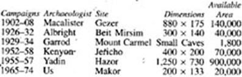
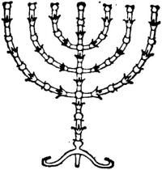
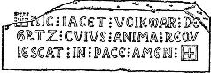
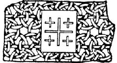
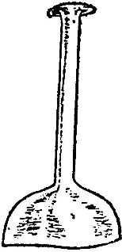
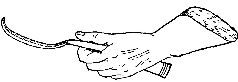
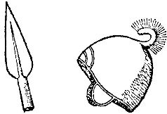
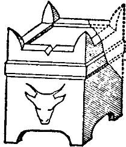
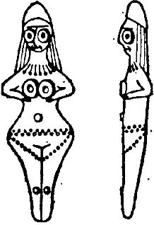

Level I, about 1950
The tell of Makor at site 17072584 in western Galilee as seen by archaeologists on Sunday morning, May 3, 1964, while standing in the olive grove to the south. From the visual appearance of the tell nothing could be deduced as to its genesis, construction or history, except that the uniformly smooth surface of the slope would suggest that at some time around the year 1700 B.C.E. it could have been paved with heavy stone blocks by Hyksos invaders moving against Egypt from the north; and the slight rise toward the eastern side of the tell might indicate that there had once been a building of some size standing at that point.

On Tuesday the freighter steamed through the Straits of Gibraltar and for five days plowed eastward through the Mediterranean, past islands and peninsulas rich in history, so that on Saturday night the steward advised Dr. Cullinane, “If you wish an early sight of the Holy Land you must be up at dawn.” The steward was Italian and was reluctant to use the name Israel. For him, good Catholic that he was, it would always be the Holy Land.
Some time before dawn Cullinane heard a rapping on his door and went on deck while the stars were still bright, but as the moon fell away toward areas he had left, the sun began to rise over the land he was seeking, and the crown of stars that hung over Israel glimmered fitfully and faded. The shoreline became visible, mauve hills in the gray dawn, and he saw three things he knew: to the left the white Muslim mosque of Akko, in the center the golden dome of the Bahai temple, and to the right, high on a hill, the brown battlements of the Catholic Carmelites.
“Just like the Jews,” he said. “Denied religious liberty by all, they extend it to everyone.” He thought that might be a good motto for the new state, but as the freighter approached land he added, “I’d feel more like a traveler to Israel if they’d let me see one good synagogue.” But the Jewish religion was an internal thing, a system for organizing life rather than building edifices, and no Jewish religious structures were visible.
Even at the dockside his introduction to the Jewish state was postponed, for the first man who recognized him was a genial, good-looking Arab in his late thirties, dressed nattily in western clothes, who called from the shore in English, “Welcome! Welcome! Everything’s ready.” Two generations of British and American archaeologists had been greeted with this heartening call, either by the present Jemail Tabari or by his famous uncle, Mahmoud, who had worked on most of the historic digs in the area. Dr. Cullinane, from the Biblical Museum in Chicago, was reassured.
For many years he had dreamed of excavating one of the silent mounds in the Holy Land, perhaps even to uncover additional clues to the history of man and his gods as they interacted in this ancient land; and as he waited for the freighter to tie up he looked across the bay to Akko, that jewel of a seaport, where so much of the history he was about to probe had started. Phoenicians, Greeks, Romans, Arabs, and finally Richard the Lion Heart and his Crusaders had all come to that harbor in glorious panoply, and to follow in their footsteps was for an archaeologist like Cullinane a privilege. “I hope I do a good job,” he whispered.
As soon as he cleared the papers for the ponderous amount of equipment stored in the freighter—the books, the chemicals, the photographic equipment, the little Diesel locomotive, the thousand things a layman would not think of—he ran down the gangplank and embraced Tabari, and the Arab reported, “Things couldn’t be going better. Dr. Bar-El will be here shortly. The other Americans are already dug in, and the photographer is flying down from London this afternoon.”
“Weather been good?” Cullinane asked. He was a lean, tall man just entering his forties, an Irish Catholic educated at Harvard and Grenoble, with excavation experience in Arizona, Egypt and the area south of Jerusalem. Under normal circumstances it would have been unlikely for a Catholic to head such a dig, for the earlier field directors of the Biblical Museum had usually been Protestant clergymen, but the bulk of the money for this particular dig had come from a Chicago Jew who had said, “Isn’t it about time we had a professional doing the work?” and Cullinane had been agreed upon, particularly since he spoke Hebrew, a little Arabic and French. He was the crop-headed type of new scholar, solidly trained and not given to nonsense. On his departure from Chicago, loaded with gear, he had been asked by a newspaperman if he expected to dig up any records which would prove that the Bible was true. Cullinane replied, “No, we’re not out to help God steady the ark.” The impudent reply had been widely quoted, but when the businessman who had put up the quarter of a million dollars for the dig saw the wisecrack he felt reassured that his money was in sober hands.
“Weather’s flawless,” the Arab replied, speaking with the fluent ease of a man whose father had been Sir Tewfik Tabari O.B.E., K.B.E., one of the Arab leaders whom the British had trusted. Sir Tewfik had sent his son to Oxford, hoping that he would want to follow him in the civil service, but the boy had from the first been enchanted by his Uncle Mahmoud’s work in digging up history, and his professors at Oxford had turned him into a first-rate scientific archaeologist. In the winter of 1948, when the Jews threatened to capture Palestine from the Arabs, young Jemail, then twenty-two, had debated a long time as to what he should do. He ended by making a typical Tabari choice: he stayed in Akko and fought the Jews vigorously. Then, when his haphazard army was crushed, he announced that he would not seek asylum in Egypt or Syria. He would stay in Israel, where he had always lived, and would work with the Jews to rebuild the war-torn land. As a result of this bold decision he found himself popular and almost the only trained Arab available for the many archaeological excavations that were proliferating throughout the country. His presence at any site meant that the highest scientific standards would be enforced and that good spirits would be preserved among the workmen, who said of him, “Jemail once dug twenty feet straight down using only a camel’s-hair brush.”
As the two friends talked a jeep squealed its brakes outside the customs area, and the driver, a petite young woman in her mid-thirties, jumped out and ran past the protesting guard to give Cullinane a leaping kiss, “Shalom, John! It’s so wonderful to have you back.” She was Dr. Vered Bar-El, Israel’s top expert in dating pottery sherds, and without her assistance Dr. Cullinane’s dig could not succeed; for she had the unusual capacity to memorize the scores of scientific reports issued during the twentieth century, so that whenever someone like Cullinane or Tabari handed her a fragment of pottery, a sherd left by some household accident that had occurred seven thousand years ago, she could usually look at the piece, then summon from her extraordinary memory pieces of similar construction found in Egypt or Jericho or Beit Mirsim. Archaeologists of five countries called her “our walking calendar,” and the commendable thing about her work was that when she did not know she said so. She was a small woman, beautiful, bright-eyed, a pleasure to have at any dig. She was also one of the first major experts who had been trained wholly in Israel: when the state came into being in 1948 she was but seventeen, and had later attended Hebrew University in Jerusalem.
“Leave the gear where it is,” she said with a musical Hebrew accent. “I’ve brought along two of the crew, and they’ll stand guard till it’s unloaded. Right now let’s head for the dig. I’m hungry to get started.” She led Cullinane to the jeep and with deft turns of the wheel soon had him on the ancient road that led from Akko to Zefat, and beyond that to Damascus, the capital of Syria.
As they entered this classic road—for some five thousand years a major east-west artery through which had flowed the contributions of Asia on their way to Venice and Genoa—Cullinane took pains to orient himself. “Could you stop the jeep for a moment?” he asked Mrs. Bar-El. “I’m sorry, but if I get mixed up at the start I never get straightened out later.” He got out of the jeep, studied his field map, turned firmly toward the direction from which they had come, and said, “Straight ahead to the west is Akko and the Mediterranean. To my right, the Crusader castle of Starkenberg. To my left, Jerusalem. Behind me, to the east, the Sea of Galilee. And if you continue in the direction the car’s headed you reach Zefat and, far beyond it, Damascus. Right?”
“Roger over,” Tabari said, but he thought it strange that in the Holy Land a man should orient himself by facing away from Jerusalem.
For some miles the riders discussed the coming dig and the allocations of work that had been agreed upon. “The photographer coming down from London is excellent,” Cullinane assured his colleagues. “Chap who did such good work at Jericho. And our architect is top-notch. University of Pennsylvania. I haven’t seen any drawings done by the girl you’ve chosen for draftsman. Is she capable?”
“She was good enough for Yigael Yadin at Hazor,” Dr. Bar-El explained.
“Oh, that the girl? How’d you get her?”
“We’re training some great artists in this country,” the little pottery expert said, and Cullinane thought: I must remember to titillate their national pride. I must. Aloud he said, “If we’ve got the girl who did the art work for Hazor, we’re lucky.”
“We are lucky,” Dr. Bar-El said, almost defensively.
Now all grew quiet as they neared the point from which the mound to be excavated would first be seen. Cullinane leaned forward, tense with excitement. To the north substantial hills appeared, and from time unremembered they had protected this road from the marauders of Lebanon. To the south matching hills were beginning to rise, offering security in that direction. A small valley was thus being formed, and along its northern edge short, sharp fingers of rock jutted out like opened hands, warding off anyone who might want to attack the ancient lifeline along which so much wealth had traveled. Dr. Bar-El turned a corner, straightened out the jeep, and drove for a few minutes. Then it loomed ahead—the mysterious target.
It was Makor, a barren elliptical mound standing at the foot of one of the projecting spurs and rising high in the air. It was difficult to believe that it was real, for it had two strange characteristics: its top plateau was quite flat, as if some giant hand had smoothed it down; and the visible flanks of the mound were perfect earthen slopes, each a glacis forty-five degrees in angle, as if the same monstrous hand had stuck out a finger to round off the edges. It looked unnatural, like a fortress without walls, and this impression was augmented by the harsh rocky spur that rose to the rear, by the hills that rose behind that, and by the rugged mountains which backed up everything. The mound was thus the terminal point of a chain of fortifications, the lowest of four descending steps, and it was perfectly placed both for its own protection and for guarding the important road that passed its feet.
Its full name was Tell Makor, which signified that the local citizens knew it was not a natural mound, laid down by tectonic forces, but the patiently accumulated residue of one abandoned settlement after another, each resting upon the ruins of its predecessor, reaching endlessly back into history. From the bare rock on which the first community of Makor had been built, to the grassy top, was seventy-one feet, made up of fallen bricks, ruptured stone walls, broken turrets, bits of prehistoric flint, and, most valuable of all, the fragments of pottery that would, when washed and inspected by Dr. Bar-El, tell the story of this solemn, yet exciting spot.
“We’ve picked the best tell in the country,” Dr. Cullinane assured his team, and he took from his briefcase the preliminary maps made from aerial photographs in which a grid of rectangular squares, ten meters to the side, had been superimposed upon the tell; and at that moment the three archaeologists in the jeep could feel that their will was being imposed upon the mound and would finally squeeze from its secret inner places the remnants of tell once vital existence. Yesterday Tell Makor had been a beautiful elliptical mound sleeping on the road from Akko to Damascus; today it was a carefully plotted target where not one pickaxe would be applied aimlessly.
“Let’s check with the 1/100,000 Palestine map,” Cullinane suggested, and Tabari unfolded a section of that beautiful map, drafted years ago by British engineers. On it the two men made calculations which zeroed in the location of Tell Makor so that other archaeologists around the world could accurately identify it: henceforth the site of their labors would be 17072584, in which the first four numbers indicated the east-west orientation and the last four the north-south. In Israel, in Asia, in the world, there could be no other spot like this, and when the superimposed layers of earth had been penetrated, one by one, the world would be able to say with some exactitude what had happened at 17072584. It was the meticulous re-creation of that history which would occupy John Cullinane and his skilled crew for the ensuing years.
He put aside the maps and jumped from the jeep. With long strides he climbed the steep glacis and finally swung onto the plateau, some two hundred yards long by one hundred and thirty wide. Somewhere in this mound he would start his men digging, and to a disagreeable extent the success or failure of the first years would depend upon how cannily he had chosen; for archaeologists had been known to select their spots without luck and to dig through fruitless levels, while others coming later to the same tell, but with superior insight, had quickly found rewarding layers, one after another. He hoped that he would be one of the lucky ones.
“Deciding where to start?” Tabari asked as he reached the plateau.
The Irishman waited for Dr. Bar-El, then said, “I’m like Sir Flinders Petrie. He organized his digs on the principle that if you command one hundred different communities to build towns on one hundred different mounds, more than ninety will place their major buildings in the northwest area. Why, nobody knows. Possibly because of the sunsets. So naturally I’m inclined toward the northwest, and we can dump our rubble over here.” He pointed to the northern edge of the plateau from which the archaeologists could look down into something not visible from the road: a precipitous gully, called throughout the east a wadi, whose clifflike sides had always protected Makor from armies seeking to establish a siege from the north. The wadi was deep enough to absorb rubble from the entire tell, should any millionaire have enough money to pay for such a total excavation.
The dig at Makor, as planned by Cullinane, would require ten years at a cost of $50,000 a year, and since he had in hand funds only for the first five years, it was essential that he quickly uncover areas of interest; for he had found that people who finance archaeological digs can be depended upon for additional funds if their interest is sustained through the first year, whereas they quickly close their checkbooks if no finds are forthcoming. It was therefore crucial that he locate his trial trenches in the right spots, for even after he had spent ten years uncovering selected levels his team would still have excavated less than fifteen per cent of the site. As he had explained to his board in Chicago, “Our educated guess is that in this tell we may have the remains of about twenty different layers of civilizations. You must understand that for me to peel these off, one by one in proper scientific style until nothing is left but the original perimeter, would require about fifty years. What we’ll do is sink two short exploratory trenches down through all the layers. That’ll take a year, but when we’re through we’ll know in general what’s at hand. Then, in subsequent years, if we get the funds, we’ll go back and dig more deeply in selected areas that promise returns. But bear with me if I repeat that we cannot possibly uncover the entire tell. What we can uncover is a picture of what happened there, and it’s that we’re after.”
“Isn’t it pretty important where you locate those first trenches?” a member had asked.
“That’s what I’ll sweat about for the next six months,” he had replied, and now the moment was at hand when he must make the critical decision.
As he stood that morning on top of the tell whose secrets he must probe, he was no ordinary man, come to the Holy Land with enthusiasm and a shovel; he had won the title archaeologist only at the end of a long period of subtle training. At Harvard he had learned to read Aramaic, Arabic and ancient Hebrew scripts. During graduate work with Professor Albright at Johns Hopkins he had mastered Mesopotamian cuneiform and Egyptian hieroglyphs until he could read them as an average man reads a newspaper. He had taken off a year to attend Carnegie Tech for advanced work in metallurgy, so that he would be able to identify with some certainty the provenience and smelting processes of local metals and their alloys. Later he had spent three winter terms at Ohio State University, taking advanced ceramics, precisely as if he intended making cups and saucers for the rest of his life, and from this experience had trained himself to guess within a hundred degrees centigrade the furnace heat at which any given piece of ancient pottery had been fired; he knew less of the historical relationships of ceramics than a real specialist like Dr. Bar-El, but in technical analysis he excelled her. Following these scientific courses he had lived for a year in New York, studying costume and armor at the Metropolitan Museum, and for another year—one of the best of his life—in the little French university town of Grenoble, specializing in prehistory and the cave art of France.
Coincident with his work among the Indians of Arizona he had attended summer sessions at the state university, working on problems of dendrochronology, whereby time sequences in desert areas could be established by comparing the wide rings left in wood by growing seasons which had enjoyed heavy rainfall and the narrow ones left by years of drought. This was followed by a full year at Princeton, enrolled in the Presbyterian Seminary, where he worked with experts on problems of Bible research; but as often happens, one of his most valuable skills he had picked up by himself. As a boy he had found pleasure in collecting stamps; perhaps he was now an archaeologist because of this accident of his childhood, but his Irish father used to growl, “What are you doin’ with them stamps?” He did not know, but when he became a man he vaguely sensed that he ought not to be fooling around with bits of paper and in some fortunate way he shifted to coins, which seemed more respectable, and this field of specialization was to prove of great value in Biblical research. He had written one of the papers which had helped prove that there had been two issues of Jewish shekels: one used in the initial Jewish revolt led by Judah the Maccabee, 166 years before Christ; and a second minted during the final revolt of Bar Kochba, 135 years after Christ. As a result of this paper he was known as a numismatic expert. All these skills, plus others like ancient architecture and the conduct of war in Biblical times, which he had acquired pragmatically during his various digs, he was now ready to apply to Tell Makor, but the location of his two trenches was so important that he intuitively postponed the decision. When the others left the tell, he remained alone, walking aimlessly across the mound, kicking idly at the topsoil to determine its construction.
A plateau only two hundred yards by a hundred and thirty wide doesn’t sound like much, he mused. Two ordinary football fields. But when you stand looking at it with a teaspoon in your hand and somebody says, “Dig!” the damned thing looks immense. He prayed to himself: So much depends on this. God help me to pick the right spot; but his attention was diverted from this problem when he noticed protruding from the earth a small object which did not look like a pebble. Bending over to inspect it, he found a small piece of lead, slightly flattened on one side. It was a spent bullet and he started to throw it away, but reconsidered.
“Voilà! Our first find on Tell Makor,” he said to himself. Spitting on his fingers, he cleaned the bullet until it lay dully, heavy in his hand. Holding it between thumb and forefinger, he asked himself, “Level? Age? Provenience?” thus using the bullet as an excuse for postponing his decision on the trenches. Taking from his briefcase an excavation card, he sat on the edge of the mound and filled it in with that exquisite, almost feminine, care he had always used in such work. The bullet had probably been fired from a British rifle, since they were the most common in these parts. Any recent date would be acceptable, but around 1950 A.D. was logical, since the bullet showed signs of aging, and he wrote that down; but he had no sooner done so than he erased the A.D. in some embarrassment and substituted C.E. He was working in a Jewish country which had formerly been a Muslim country, and here the use of Anno Domini was frowned upon; yet the world-wide system of dating had to be respected, and that required a Before Christ and an After Christ whether Muslims and Jews liked it or not, just as all longitude was measured from an English observatory near London, whether Anglophobes liked that or not. So Cullinane wrote his date 1950 C.E., which had originally signified Christian Era but which was now universally read as Common Era. Dates before Jesus were written B.C.E., Before the Common Era, and this satisfied everyone.
With precise pen marks he sketched the bullet and indicated its scale, 2:1, which meant that the drawing was two times as large as the original. Had the reverse been true he would have labeled it 1:2. Reviewing his playful entry, his Item One of the excavation, he was pleased to find his pen still accurate and added a neat J.C.

Bullet from a British rifle
As Cullinane finished the final dot, he looked up to see that the most important member of his staff had arrived from Jerusalem and had climbed the tell to greet his colleagues. He was a tall, slender Jew, two years older than Cullinane, with deep-set eyes peering from beneath dark eyebrows. He had sunken cheeks but full lips that were eager to smile. His dark hair came well down onto his forehead and he moved with the grace of a man who had been both a soldier and a scholar. At present he worked in one of the government ministries in Jerusalem and was pleased with the invitation that would keep him at Makor from mid-May through mid-October, for he was a trained archaeologist whose political skills had been found so valuable to the government that he was rarely allowed out in the field. His position at Makor was ambiguous. Ostensibly he was to serve as chief administrator of the project, determining salaries, working hours and living arrangements. If he were not efficient, the complex personalities involved in the dig could waste their time in petty squabbles, if not outright feuds. He was hired to be the dictator, but no one at Makor would recognize this fact, for Ilan Eliav was a master administrator, a man who rarely lost his temper. He was probably the best-educated scholar in the expedition, speaking numerous languages, but his greatest asset was that he smoked a pipe, which he had a habit of rubbing in the palms of his hands until the complainant before him reached some kind of sensible decision without depending upon the intervention of Eliav. Workmen at previous digs had said, “I’m going in to see if the pipe will approve a raise.” And the kindly Jew with the deep-set eyes would listen as if his heart were breaking, and the bowl of his pipe would revolve slowly in his palms until the workman realized for himself how preposterous a raise would be at that time.
Actually Dr. Eliav was the official watchdog of the dig; the tells of Israel were far too valuable to allow just anyone to come in with a team of amateurs to butcher them. The nation contained more than a hundred unexcavated sites like Makor, and during the next two or three centuries teams from universities in Peking and Tokyo, or from learned societies in Calcutta or Cairo, would accumulate the necessary funds to dig out these long-forgotten cities, and it would be a disservice to humanity present and future if the sites were now abused. The problem was especially acute when archaeologists like Dr. Cullinane proposed to excavate by the trench method, for many crimes against history had been perpetrated in Israel by enthusiastic men with shovels who dug hasty trenches through improperly recorded levels. Normally the Israeli government would have rejected a trench proposal like Cullinane’s, but the Irish scholar had established such a good reputation, and he was known to be so well trained in archaeological matters, that in his case permission was granted; nevertheless, Dr. Eliav had been detached from his important desk job to be sure that the valuable tell was not mutilated.
He now strode across the top of the mound, extended a long arm to a man he instinctively liked, and offered an apology: “I am most sorry not to have been here when you arrived.”
“We’re fortunate to have you on any terms,” Cullinane said, for he knew why a scholar as important as Eliav had been released to work with him. If he had to accept a watchdog, he was pleased that it was to be Eliav; it was much easier to explain problems to a man who knew more than you did.
“I tried to break away last week,” Eliav explained. “I had three good days up here getting things organized, but they called me back. I want you to see the camp.” He led Cullinane to the western end of the plateau, where an ancient footpath led zigzag down the glacis toward an old rectangular stone building whose southern face was composed of three graceful Arab arches forming an arcade which led to four cool white rooms. The largest would be Cullinane’s office and the library; the others would house photography, ceramics and drafting.
“This looks better than I expected,” Cullinane said. “What was the building originally?”
Eliav pointed with his pipe stem to Tabari, who volunteered, “Probably the home of some Arab olive grower. Two or three hundred years ago.” Cullinane was impressed with the easy manner in which Tabari and Eliav worked together, showing none of the area’s traditional antagonism between Arab and Jew. They had co-operated on several previous digs and each respected the competence of the other.
“Out here are the sleeping tents, four of them,” Eliav continued, “and along this path lies Kibbutz Makor, where we’ll take our meals.” As he led the way to the communal agricultural settlement, Cullinane noticed the bronzed young men and women engaged in the work of the kibbutz. They were unusually attractive, and Cullinane thought: It took only a few years to change the hunched-up Jew of the ghetto into a lively farmer. Looking at the muscular young people, especially the free-moving women, he could not detect that they were Jews. There were blonds with blue eyes, and these looked like Swedes; there were blonds with square heads shorn flat, and these looked like Germans; there were redheads who looked like Americans; studious types who looked like Englishmen; and others who were sunburned to a near-black and who looked like Arabs. An average man, put amongst the lithe young people of Kibbutz Makor, would have been able to isolate only about ten per cent who looked like his preconception of a Jew, and one of them would have been Jemail Tabari, the Arab.
“We’ve reached three major decisions about the kibbutz,” Eliav explained as the group approached a large dining hall. “We won’t sleep here. We will eat here. And up till harvesting begins we’ll be allowed to employ the kibbutzniks on the dig.”
“Is that good or bad?” Cullinane asked.
“Rest easy,” Eliav said. “We brought this tell to your attention only because the kibbutzniks kept pestering us with samples. ‘See what we dug out of our tell!’ These kids love archaeology the way American kids love baseball.”
The archaeologists were seating themselves in the large mess hall when a lean crew-cut young man of thirty-five, wearing sandals, shorts and T-shirt, approached to introduce himself as “Schwartz… secretary of this kibbutz. Glad to have you eat with us.”
Cullinane launched a formal and somewhat academic reply, beginning, “We want you to know how much we appreciate…” but Schwartz cut him off.
“We appreciate your dollars,” he said, leaving abruptly to signal a girl who was serving coffee.
“Genial fellow,” Cullinane mumbled as Schwartz deserted him.
“In him you see the new Jew,” Eliav half-apologized. “He’s what makes Israel strong.”
“Where’s he from? He spoke like an American.”
“No one knows, really. He’s probably called Schwartz because he’s dark. He survived, God knows how, both Dachau and Auschwitz. He has no family, no history, only raw drive. Look at his arm when he comes back.”
A good-looking, husky girl in tight shorts strode to the table, dealt out some cups and saucers and began pouring coffee as if she were a laborer pouring cement. Slamming the pot down, in case anyone wanted seconds, she went off to fetch some sugar, but Schwartz had anticipated her and slapped down a sugar bowl before Cullinane.
“Americans want everything sweet,” he said, but Cullinane ignored the remark, for he was staring at Schwartz’s left arm where in blue indelible ink was tattooed a concentration-camp number: S-13741.
“Birthmark,” Schwartz said.
“You speak like an American.”
“After the war I tried living in Boston. But I came here to join the fighting.”
“Did you get your name in Boston?” Cullinane asked.
Schwartz stopped. “How’d you guess that? They were the family I lived with. Nice people but they didn’t know from nothin’. I wanted to be where the war was.”
The husky girl now returned with a second bowl of sugar, started to slam it onto the table, saw that Schwartz had got there first, and retreated with the bowl to another table. As she left, Cullinane said, “It’s refreshing to see a girl who doesn’t wear lipstick.”
“She does it for the defense of Israel,” Schwartz said belligerently.
“How’s that?”
“No lipstick. No salon dancing.”
“For the defense of Israel,” Cullinane repeated.
“Yes!” Schwartz half-snarled. “Ask her yourself. Come here, Aviva.”
The stocky girl sauntered back and said contemptuously, “I’m not one of those salonim.”
“Salonim,” Schwartz interpreted. “Those of the salon.”
“I pledged with all my friends. Never dance salon style.” She looked insolently at Cullinane and left with the awkward rhythm of a girl who excels in folk dancing, and Schwartz followed her.
“I hope Aviva’s not on the pottery crew,” Cullinane said quietly.
“Wait a minute!” Dr. Bar-El flashed. “When I was seventeen I took that same pledge. We felt then as Aviva feels now. Israel needed women who were ready to bear arms… to die at the battlefront if necessary. Lipstick and salon dancing were for the effete women of France and America.” Primly, she put down her coffee cup and said, “I’m glad the spirit still exists.”
“But you wear lipstick now,” Cullinane pointed out.
“I’m older,” Mrs. Bar-El said, “and now I fight for Israel on other battlegrounds.”
It was an odd statement, which Cullinane preferred not to explore at the moment. “I think we should get back for the meeting,” he suggested, and the four scholars wound their way along the pleasant path toward the arched stone house serving as their headquarters, but as Cullinane reached the building he happened to look south across the road and noticed for the first time the olive trees of Makor: they were incredibly old. Their existence was not measured in years or decades but in centuries and millennia. Their trunks were gnarled, their branches broken. Many retained no center wood at all, for the years had rotted away their cores, leaving only fragments standing, but these were sufficient to provide the twisted arms of the tree with life, and in the late spring the olives were covered with those gray-green leaves that made the trees so attractive.
Each wind that came down the ancient road rustled these leaves, turning the aspect of the grove from green to gray to some intermediate, shimmering color. Cullinane had seen olives before, but never a grove like this, and as he was about to enter the building from which the dig would be directed, he felt himself pulled across the road to inspect one notable tree—a veritable patriarch whose gnarled trunk was merely a shell through which one could see in many directions. The tree bore only a few branches, but these were thick with maturing olives, and as the archaeologist stood inquiringly beside this stubborn relic he was as close to the mystery of Makor as he would ever be, and in the presence of this august tree John Cullinane felt humbled. It was a proper preparation for a dig and he walked in silence to the room where his paid staff and their nineteen helpers had assembled from various parts of the world in response to an advertisement he had run in various British and Continental newspapers: “An archaeological dig is proposed in western Galilee for the summer campaign of 1964 and succeeding years. Qualified experts are welcomed if they can pay their own transportation to Israel. Food, lodging, medical care provided, but no salaries.” More than a hundred and thirty experienced men and women had applied and from the list he had selected the team who now sat before him. They were dedicated scholars, eager to work at their own expense if only they could help probe the secrets that lay buried in the tell, and each was prepared to use his mind and imagination as skillfully as he used his pick and hoe.
On the blackboard Dr. Eliav had printed the exacting schedule that would govern work for the next five months:
5:00 A.M. Reveille
5:30 A.M. Breakfast
6:00 A.M. to 2:00 P.M. Work at dig
2:00 P.M. Lunch
3:00 P.M. to 4:00 P.M. Siesta
4:00 P.M. to 7:00 P.M. Work in offices
7:30 P.M. Dinner
8:30 P.M. to 10:00 P.M. Consultations
“Any questions?” Eliav asked.
In a high, petulant voice the English photographer whispered, “I don’t find any break for afternoon tea.” Those who knew how tough he could be laughed, and he was assured by Eliav that he, at least, would be provided for. “I shall resume breathing,” the English scholar said.
Eliav then turned the board around to display five lines of data summarizing former digs to remind the archaeologists of the high standards facing them. The lines read:
Now Cullinane took a pointer and said, “Gentlemen, and you very able ladies, I’ve asked Dr. Eliav to list these five earlier digs because we must remember them as we work. The dimensions are in yards and the last figure gives in square yards a rough estimate of the site actually available for digging. You’ll notice that one of the greatest was very small in size, but the results Dorothy Garrod achieved in the Carmel caves were incomparable. She seemed to be digging through deposits of pure gold. I think we could also remember profitably what Kathleen Kenyon accomplished at Jericho, because she didn’t get to that tell till it had been worked over by many predecessors. It took Miss Kenyon to dig down and find the answers. Two other digs are my favorites. Gezer was excavated by one man, Macalister, a church organist from Dublin, with the help of one man, Jemail Tabari’s uncle. But the excavation and reporting done by these two men remain a masterpiece. We’re ten times as many and we must accomplish ten times as much. But our ideal shall be Albright. We give his figures for the last campaign only. He found nothing spectacular at Beit Mirsim, but he taught archaeologists how to work scientifically. When we’re done, I want it said, ‘They worked as honestly as Albright.’”
He paused, then pointed to the last line. “As you can see, we’re a small tell, so we can afford to go slowly. We’ll sketch each item exactly as we find it and photograph it from several angles. Our plateau contains only four acres, but remember that in the days of King David, Jerusalem wasn’t much larger. In point of fact, this year we shall attack no more than two per cent of our total area.” He asked for maps of the tell to be distributed, and as the scholars studied the contour lines, Jemail Tabari started his briefing.
“All we know of Makor’s history appears in six tantalizing passages. Ancient Hebrew sources mention it once. When the twelve tribes were receiving their apportionments. It’s listed as a town of no significance on the border between the portion of Asher along the sea and of Naphtali inland. It was never a major city like Hazor nor a district capital like Megiddo. In the Amarna letters found in Egypt and dating back to about 1400 B.C.E. one reference: ‘Crawling on my belly, my head covered with ashes of shame, my eyes averted from your divine countenance, I humble myself seven times seven and report to the King of Heaven and the Nile. Makor was burned.’ A commentary on Flavius Josephus provides a cryptic passage: ‘Jewish tradition claims that Josephus escaped by night from Makor.’ In a famous commentary on the Talmud we find a series of delightful quotations from Rabbi Asher the Groats Maker describing day-to-day life in our countryside. In the next seven hundred years silence, except for one brief sentence in the report of an Arab trader out of Damascus: ‘And from the olives of Makor, much profit.’ The groves we see on the other side of the road could be several thousand years old. In the Crusader period, however, we come to substantial written records, and I hope all of you will read Wenzel of Trier’s Chronicle. You’ll find three photographic copies in the library. Briefly, Wenzel tells us that Makor was captured by the Crusaders in 1099 and for about two hundred years was the seat of the various Counts Volkmar of Gretz. We’re convinced that at this level we’ve got to find something of substance. After 1291, when Makor fell to the Mamelukes, the site vanishes from history. Not even traders mention it, and we must assume that human occupation ended there. But from the bedrock of the tell, insofar as we can identify it, to the top, is a distance of seventy-one feet, and we have a right to suppose that many good things lie buried in that vast accumulation. John will explain what we’re going to do.”
“Before he does,” the English photographer interrupted, “what’s Makor mean?”
“Sorry,” Tabari said. “Old Hebrew word. Makor. Source.”
“Any significance?” the Englishman asked.
“We’ve always supposed it referred to a water supply,” Tabari replied. “But there’s no record of where the water was. If any of you have bright ideas, we’d be pleased to hear them.”
“Isn’t it hidden under the tell?” the photographer said.
“We’ve often wondered. Go ahead, John.”
Cullinane fastened a large-scale map of the tell to the blackboard and studied it. “Where to begin?” he asked. “We shall dig two trenches, but where to locate them?” He surveyed the map for several moments, then turned away to face his team. “Each dig has its special problems, but we have one I’ve not encountered before. As you know, for some years I’ve been trying to gather the funds for this dig without luck, until one night at a dinner party I chanced to mention the fact that the tell I had in mind contained a Crusader’s castle. This man to my right repeated, ‘A castle?’ When I nodded, he said, ‘That would be a great thing to dig up, a castle!’ I carefully explained that when I said castle I meant a ruined castle, but this captivated him even more. ‘Can you imagine,’ he asked his wife, ‘digging up a ruined castle?’ Before the week ended he had put up the money. Three times I explained to him that although he was interested in the castle, I was concerned with what lay below. I’m sure he didn’t hear. So at Makor…”
“We’d better find a castle,” Tabari suggested.
“And if we do, I’m sure we can jolly the gentleman along regarding the real work that you and I wish to accomplish. Now”—he returned to the map—“where do you find a castle?” He allowed the question to sink in, then said slowly, “My whole intuition warns me to start at least one trench in the northwest quadrant, but I’m deterred by two factors. The tell has a slight rise from west to east, from which I conclude that the Crusader fortress must have defied tradition and stood in the northeastern quadrant. Second, we haven’t determined where the main gate to the tell stood, and both Eliav and Tabari believe it to have been at the southwest. I’ve argued that it must be dead south in the middle of this wall. But now I’m willing to concede that the others are right. If they are, we’d have to dig in the southwest for the gate and in the northwest for the castle, and that’s putting all our eggs in the western basket. So late this afternoon I made the final choices. Here in the southwest our major trench,” and he drew a bold straight line into the tell, “and here in the northeast a trench into the castle,” and he marked a short north-south cut. The scientists relaxed. The decision had been made and it was obvious what Cullinane was doing: he would dig quickly for the Crusader castle in order to find something that would satisfy the man putting up the money; but he would dig quietly at the presumed gate area in hopes of finding those significant layers, those sherds of broken pottery, those stone fragments of wall and home, that would reveal the greater history of the tell.
When the meeting ended and the others had gone, Tabari lingered, looking dissatisfied, and Cullinane thought: Damn, he’s one of those who listens, says nothing, then comes around to warn you that he can’t approve your decision. But almost immediately Cullinane dismissed the thought as unworthy. Jemail Tabari was not like that. If he was perplexed it was for substantial reasons. “What is it, Jemail?”
“You’re right in every detail,” Tabari began.
“Except one?”
“Correct.” The Arab pointed to the big map. “Trench A is where it should be. Trench B is bound to hit the castle. What I don’t like, John, is your plan to dump the rubble in the wadi.” He pointed to the deep gully to the north of the tell and ran his long fingers lovingly back and forth across the area that Cullinane proposed to fill.
“Why not?” Cullinane asked. “It’s a natural spot for the rubble.”
“Correct,” Tabari agreed. He pronounced the word koe-rect, giving it a humorous twist. “But for that very reason it’s also a natural spot in which other things might have happened. Burials, dumps, caves. John, we’re gambling on some very big ideas here. We’re not just excavating a Crusader castle to gratify…”
“Correct!” Cullinane interrupted, using Tabari’s word against him.
“In my research one thing perplexes me… always has. Mind if we go out to the tell?” He led Cullinane up the footpath until they reached the plateau, where to their surprise they saw the figure of Dr. Eliav, kneeling on one knee at the eastern end, where Trench B was to run, and when he heard their approach he slipped quietly down the eastern slope and disappeared. “Wasn’t that Eliav?” Tabari asked.
“I doubt it,” Cullinane replied, but he knew it was.
Tabari led the way to the northern edge of the tell, from which they could look down the very steep flank and into the bottom of the wadi. It was an ugly, sharp fall, broken by one area halfway down where level land appeared for a hundred yards, before the sheer fall continued to the bottom of the gully. “The missing factor in all I’ve read,” Tabari said, “stems from the word Makor itself—source. That from which another thing springs. The life factor. Why did generation after generation of people settle here? It could only have been because there was water… and plenty of it. But we’ve no idea where it was located.”
“Where does the kibbutz get its water?”
“Modern artesian wells.”
This provided no clue, so Cullinane asked, “You think the original well may have been outside the town walls? Like Megiddo?”
“I don’t know what I think,” Tabari said cautiously. “But I don’t want you to fill up that wadi, because in a couple of years we may want to dig. Right down there.”
“Your Uncle Mahmoud is famous in the reports because he followed hunches. You want me to follow this one?”
“Koe-rect,” Tabari replied, and the dump was relocated.
Next morning Tabari distributed the small picks and hoes used by modern archaeologists—no shovel would be permitted at a respectable dig—and proceedings got off to a favorable start, principally because he followed another hunch. At Trench B in the northeastern sector he happened to see one of the kibbutzniks inspect an object and start to call a supervisor. On second thought the young man hesitated, as if he were going to place a small object in his pocket, keeping it for later sale. “Did you want me?” Tabari asked nonchalantly, walking up and holding out his hand.
“Yes,” the kibbutznik said. “I think I’ve found something,” and he handed Tabari a coin, which later occasioned much debate at the mess.

Turkish gold coin
It had obviously been issued by some Arabic-speaking nation, but what it was doing on Makor was not so easy to determine. Cullinane argued, “It was found within a few inches of the top. It can’t signify the presence of an Arab town nobody ever heard of. Yet it looks quite old. Can you decipher it, Jemail?”
Tabari had read some of the Arabic script and was trying to untangle the rest when the photographer appeared with two books from the library showing the coins of Palestine, and after much checking back and forth proved that the coin had been issued some time around the year 1000 C.E.
“That’s hard to accept,” Cullinane protested. “That’s a hundred years before the Crusaders, and if what you say is right…” He hesitated, then used the classic complaint of the archaeologist: “That coin has no right to be there!” Later he told Tabari, “Everything would have been a lot simpler if you’d let that kibbutznik keep his damned coin and maybe sell it to some tourist in Akko. Warn your men not to dig up any facts that confuse the issue.”
But four days later the men at Trench B found something that was indeed bizarre, and when Cullinane finished his card he joked, “Tabari, somebody’s salting our dig.” This was a constant danger at an archaeological site: enthusiastic workmen, seeking to gain bonuses and also to please the foreigners whom in general they liked, were accustomed to hide things in the soil and then to come upon them triumphantly with their hoes; but cursory inspection of the new find satisfied even Cullinane that no workman could have procured this particular item for salting; it was made of gold.
Golden Menorah
The menorah, because it was so exclusively Jewish, occasioned much excitement both at the dig and at the kibbutz, but it was impossible to date, for the seven-branched candelabrum had been used by Jews at least since the days of Exodus, when God handed down detailed instructions as to how they should be made: “And six branches shall come out of the sides of it; three branches of the candlestick out of the one side, and three branches of the candlestick out of the other side.” The Lord had gone on and on, for apparently the menorah was an object of personal importance to Him.
“It’s a work of art,” Cullinane admitted grudgingly, “but of no archaeological value.” He pushed it away, unaware that it was to become the most notorious single object that would be found at the dig. “Damn,” he growled. “A bullet, a gold coin nearly a thousand years too old and a menorah. All in the wrong levels at the wrong times. What kind of dig is this?”
Three mornings later an event occurred which at the time he did not consider important: a journalist from Australia, a likable, breezy fellow, stopped by the dig and after asking many irrelevant questions happened to see the gold menorah. “What’s that?” he asked.
“It’s called a menorah,” Cullinane explained somewhat impatiently.
“This mean you’re going to find a lot of gold …”
“It’s much too recent to be of any archaeological value.”
“I understand, but even so, could I have a photograph of it?”
“I think we’d better not.”
“By the way, what is it?”
“A seven-branched candlestick,” Cullinane explained, and some days later, when time came to review what had gone wrong, he was able to recall two things that had happened at this point. The Australian had carefully counted each of the arms—“five, six, seven”—while a look of almost boyish pleasure came into his frank and appealing face.
“Dr. Cullinane, if I were careful to explain that this menorah, as you call it, had no historical significance, couldn’t I please have just one photograph?” And against his reasoned judgment, Cullinane gave permission. Quickly the Australian whipped out a Japanese camera and called for one of the older kibbutzniks to pose holding the candelabrum. “Look at it,” he ordered the man, and after a few whirlwind operations he thanked Cullinane and hurried back to the airport at Tel Aviv.
“I wish I had such energy,” Cullinane laughed, but he was diverted from further comment by Tabari, who came running from Trench B with a coin that had been dislodged from a crevice among some buried stones. It was so large that it must originally have been of considerable value, but when cleaned it turned out to be not a coin at all but a bronze seal.

Seal of the Crusader Volkmar VIII
It was a striking find, an authentic Crusader piece, and while it did not prove that Trench B was going to intercept the castle it did prove that at least one of the Volkmars had been on the tell. “I think we’re close to the castle,” Tabari said with quiet enthusiasm, and Cullinane sent Paul J. Zodman, his Chicago millionaire, a cable stating that positive identification of the ruins seemed near at hand.
Before Zodman could reply, a copy of a London paper reached Makor with news that shook the dig, and it was followed by papers from Rome, Paris and New York, repeating a lurid story about goings-on at the Makor dig. For the Australian had released with photographs an exciting yarn under the title “The Candlestick of Death,” relating how in Bible times an evil king had identified his seven principal enemies and of how he had lighted seven candles, instructing his general, “By the time the seventh candle burns out, my seven enemies are to be dead.” The first candle guttered down and the first enemy was beheaded. The sixth flickered away and the sixth enemy was gone. “But as the seventh candle trembled in the central cup, the general turned unexpectedly and lopped off the head of the king, for he was his own worst enemy. And then the general buried the hateful seven-branched candelabrum beneath the wall, where Dr. John Cullinane has so brilliantly found it, for it was a thing accursed.”
The main photograph showed a distinguished-looking elderly scholar recoiling from the menorah in horror. The caption read: “Dr. Gheorghe Moscowitz, renowned archaeologist, says, ‘This evil piece may well doom all who possess it, for it bears the curse of death.’”
Cullinane groaned and did something he rarely did. He swore. “Who in hell is Dr. Gheorghe Moscowitz?”
Tabari said, “He’s that nice old Rumanian who sweeps up.”
“Get him in here,” Cullinane snapped, but when the kibbutznik appeared, soft-spoken and apprehensive, Tabari took over.
“This you in the picture?”
“Dr. Cullinane was standing there when the man took it.”
Cullinane studied the picture and said, “I don’t remember you looking that way.”
“Just before the man took the picture he made a face at me,” the Rumanian explained. “I jumped back.”
“But surely you didn’t say anything about a ‘curse of death’?”
“No. But as the man was going to his car he called me over and asked if I thought a candlestick could carry a curse, and to get rid of him I said, ‘Maybe.’”
That afternoon the first excursionists stopped at the tell, asking to see the Candlestick of Death, and the next morning a tour bus arrived. Cullinane was distressed and sought out Eliav, to whom he said, “I’ve worked hard to protect the good name of this dig. Six of the applicants who volunteered to help us were publicity hounds, and I kept them off. Like Stikkler of Geneva.”
“We saw your sensible interview when the Chicago reporter wanted you to say that you were expecting to dig up new revelations about the Bible.” Eliav lit his pipe.
“And yet we are digging among the foundations of three great religions. We’ve got to keep it clean.”
“Do you expect to find materials relating to Christianity?” Eliav asked.
“Materials? You mean manuscripts… proofs? No. But insights? Yes.” The two men fell silent, and after a while Cullinane asked, “As a Jew, don’t you hope to find something that will illuminate…”
“Why do you suppose I work on these digs?” Eliav asked. “Each time I sink a pick into the earth, I hope, in a vague sort of way, to turn up something that will tell me more about Judaism.” He hesitated. “No, that’s wrong. Not tell me. Tell the world. Because the world needs to know.”
The responsibility of the task on which the two men were engaged caused them to look with disgust on the newspaper stories, for although neither expected to uncover specific new materials relating to Judaism or Christianity or Islam, each hoped that Makor might provide some serious information which would advance understanding of the societies in which these religions arose. “From now on we keep newspapermen and tourists out of here,” Cullinane concluded, but even as he spoke, Tabari appeared with a cable from Chicago:
CULLINANE STOP REGARDLESS OF WHAT OTHER FINDS THE ISRAELI GOVERNMENT MAY DEMAND FOR ITSELF IT IS IMPERATIVE THAT YOU SECURE CANDLESTICK OF DEATH FOR CHICAGO PAUL J. ZODMAN
Cullinane shook his head and gave Tabari the job of reassuring Zodman that it would be arranged. Chicago would get the treasure.
On the next day such trivia were forgotten, for Eliav reported that workmen in Trench B had uncovered positive proof that they were digging in Crusader ruins. “An inscription which can be dated 1105 C.E. John, it looks as if we’ve hit the castle!”
As word of the discovery sped through the kibbutz, a strange thing happened: clerks counting eggs, cooks at work in the kitchen, boys in school and the volunteers from the various countries stopped what they were doing and hurried silently to the tell, where they stood in expectant groups, watching as the archaeologists tapped gingerly at pebbles while girls with brushes cleared away the debris. From thousands of miles away men had come to probe into the secrets of the tell and at this hour they had struck a significant thing. It was a magnificent moment.
But so many spectators crowded the edges of Trench B that Tabari had to move them back, lest the sides collapse; and as the crowd withdrew, ten of the stronger workmen jumped down to haul away the last of the rubble. But the rock bearing the inscription they did not touch, for it would first have to be photographed in situ and then sketched by the camp draftsman in the precise position in which it was found, because from such photographs and drawings some imaginative theorist who had never seen Makor might construct an explanation which would illuminate a whole period of history. When the pictures were taken, Tabari called his workmen out of the trench and spectators were allowed to file in and see for themselves the first major find at Makor. Cullinane waited his turn, and when he saw the beautiful old stone, carved so carefully by some medieval guildsman, he experienced a rush of joy. The castle existed! The first stage of the dig was a success, and in succeeding years the beautiful ruins could be leisurely explored. In the meantime he filled out the provisional card.
Headstone of the Crusader Volkmar I
When Tabari saw the date he objected, pointing out that in this instance the stone could be ascribed with finality to the year 1105 C.E. because there was documentary evidence in Wenzel of Trier’s Chronicle that Count Volkmar of Gretz had died that year, but Cullinane observed dryly, “We know when he died, but we don’t know when the stone was carved and let into the wall. More likely around the date I suggest.”
An unfortunate atmosphere now developed at the dig, the kind of thing an experienced administrator tries to forestall; nothing of even minor importance had been uncovered at A, so that the team working at that site began to lose spirit, while the gang at B greeted each morning eagerly, wondering what evidence they would lay bare that day: perhaps Crusader dining plates decorated with fish, pieces of chain armor, carved fragments from a chapel, dozens of stones which could impart a very real sense of a castle in which knights had lived and from which they had gone out to fight. During one period of three weeks in June, the diggers found stones that were heavily charred—even cracked apart by some forgotten heat—and they speculated on what accident could have built up a blaze so great as to scar a whole section of castle. Digging at Trench B in those days was an exciting experience, and if one wanted a good example of the manner in which archaeology could uncover lost secrets it was there.
At the same time Trench A showed how a dig could go wrong, for it had obviously missed the main gate. After weeks of disappointing excavation Cullinane assembled his crew at the barren trench and asked, “What’s to do?” Eliav now admitted that the gate must stand well to the east, where Cullinane had suggested in the first place, and he advised abandoning the disappointing trench and transferring operations seventy yards eastward, but Cullinane said no: “At Trench B we’ve found the castle, and if the rest of the tell is unproductive we need to know that too.” To the disappointment of the Trench A kibbutzniks he ordered them to go ahead as planned, trying to convince them that “what you’re doing here is just as important as what they’re doing over there.” He found this a difficult thesis to defend.
So the gang at Trench A plodded through the unrewarding rubble until by brute strength they had thrown out enough soil to lay bare the three concentric walls that had guarded Makor. Sometime around 3500 B.C.E. men not yet identified had built the thick outer wall by throwing together huge stones in haphazard piles. Two thousand years later, well before the age of Saul and Solomon, some other unidentified group had built the sturdy middle wall. And two thousand five hundred years after that, at the time of the Crusaders, the inner wall had been erected, and it was a European masterpiece. How it had been penetrated and what part the castle fire had played in its destruction Cullinane, as a scientist, refused to guess. He supposed that after the completion of this final wall the sloping flanks had been repaved with rock, the most recent construction on the tell, a mere eight hundred years old. Attacking Makor could never have been a simple undertaking. Cullinane, visualizing the plateau crouched within the triple walls—they did not stand, of course, in three separated rings; all were crumbled and each grew out of its predecessor, but each also existed in its own unique construction—told the others, “All we’re looking for occurred within this little stone cocoon. We’ve laid bare the pattern but not the significance.”
And then in quick succession, some distance inside the inner wall, the diggers at Trench A came up with three finds, none so spectacular as the remnants of the castle but all of a nature that sent the history of Makor rocketing backwards, so that after these items were appraised by the scholars the balance between the trenches was restored, and the hidden secrets of the mound began to unfold in an orderly pattern. The first find was merely a piece of limestone intricately carved in a manner no Jew or Christian would adopt; it was obviously of Muslim origin, a poetic decoration for a mosque—but on its face some later Christian hand had imposed a panel with five crosses.
Muslim Tracery with superimposed Christian panel
The experts now focused on Trench A, where a picture of chronological confusion developed, indicated by interrupted building lines and broken foundations. The Muslim stone proved that either a mosque or part of a building used as a mosque had once stood in this area, but that later Christians had converted it into a church. However, as the diggers probed deeper, it became clear that the significant building had been a great Byzantine basilica with a mosaic floor, and Cullinane dug with increasing excitement, hoping to uncover some kind of substantial proof that Makor had owned one of the early Christian churches of the Galilee; but it was Tabari who finally brushed away a pile of dust to reveal a handsome stone on which had been carved a set of three crosses in bas-relief.
When he climbed out of the trench, Eliav went down with the photographer for a series of shots of the stone in situ, for it was essential to record where it had stood and how it had fitted into the wall, especially since the stone was lodged in a section which seemed to have been built and rebuilt several times: whether it had formed part of the mosque could not now be determined; only later excavation would establish the relationships. But as Eliav brushed away some earth so that the camera could catch a shadow showing how the rock abutted onto those above and below, some irregularity on the upper surface of the stone caught his practiced eye and he asked for a small pick and a brush. With these implements he dislodged the dust, sixteen hundred years old, that had sifted in between stones, and he satisfied himself that he had come upon something of great moment. Without speaking, he made way for the photographer, and walked slowly over to where Cullinane was showing his sketch to Vered Bar-El and Tabari. Taking the card, Eliav said quietly, “I’m afraid you’ve some more work to do on this one, John.”
“What do you mean?”
Eliav looked soberly at his colleagues. “The kind of thing we dream about,” he said.
The other three experts lined up behind him as he led the way back to the trench. No one spoke, but at the newly found stone Cullinane asked the photographer to retire, then fell on his hands and knees to peer into the dusty space a quarter of an inch high. When he rose his eyes were alight, and Dr. Bar-El and Tabari, when they saw what Eliav had partially uncovered, reacted in the same way.
“I want the draftsman down here right away,” Cullinane called. There were only a few hours of good light left, and he directed her to sketch from all angles the Christian rock with its stalwart crosses. At the same time the photographer was directed to shoot the rock lavishly, after which they would pull out the stone to inspect the hidden face; but in spite of the urgency that communicated itself throughout the dig, it became apparent that the remaining hours of that day would have to be spent in drawing. Any further work on the rock must wait till next morning.
“We could do it under lights,” Tabari suggested, but this Eliav quickly vetoed, and as darkness fell a sense of deep excitement settled over Makor.
At dinner the older kibbutzniks were as pleased as the youngsters who worked at the dig, partly because every family in Israel had at least one amateur archaeologist—rare was the house that had no flints, no pottery, no echoes of the past—and partly because everyone in the kibbutz thought of the work as “his dig.” “I hear we hit something big today,” one of the serving men said to Cullinane. The Irishman’s eyes were too bright for him to deny his excitement.
“We found the cornerstone of a Christian church,” Cullinane replied. “Great day for the Irish.”
“But that running around at the end?” the man asked. “What was it about?” He propped his tray on the table, leaning on it as if he were the owner of a restaurant.
“We don’t know,” Cullinane said.
“Can’t you guess?” the kibbutznik demanded.
“We’ll guess tomorrow,” Cullinane replied. He was becoming irritated with this man.
But the young fellow said, “Could we come up and watch?” and Cullinane became aware that eight or nine of the kitchen staff had crowded about his chair, eager to know what was happening on their tell.
“All right,” Cullinane said. “Be there at six.” And as day started, more than a hundred persons lined the trench, watching silently as the four senior archaeologists descended to work on the Christian stone. “You have enough photographs?” Cullinane asked the English cameraman.
“Developed them last night. All okay.”
“You have enough sketches?” The young woman nodded, so Tabari began working cautiously along the edges of the rock, but it could not be moved.
“We’ll have to take out those layers on top,” Eliav suggested, and to do this required the better part of an hour. None of the watchers left.
The important stone now stood with only one large rock bearing down upon it, and Cullinane called the photographer in for a final series of shots, after which he and Eliav began to lift the obstructing stone with crowbars. Slowly they raised the ancient burden until Tabari, peering into the dusty darkness, could see the surface about to be exposed. “It’s there!” he shouted, and Dr. Bar-El, looking over his shoulder, whispered, “My God! It’s perfect.”
They took away the cover stone, then brushed the dust from the long-hidden surface to display the carving of a little flat wagon with funny flat-sided wheels bearing a house with a curved roof, guarded by palm trees. The archaeologists stood back so that the kibbutzniks could see the treasure, but no one spoke.
Finally Eliav said, “It’s a great day for the Jews,” for this was a folklore representation of the flat wagon bearing the wooden Ark of the Covenant in which the tablets of the Ten Commandments were supposed to have been carried from Mount Sinai to the Promised Land. Originally this stone must have enjoyed a place of honor in the synagogue of Makor, but when that structure was torn down by the victorious Christians, some workman had carved his three crosses on a different face, while the vanquished Jewish side was cemented into the darkness of the basilica. To have the Jewish symbols exposed now, before Jews who had returned from exile to build their kibbutz near the ancient site, constituted a luminous moment; and Dr. Cullinane, happening to look up from the trench, saw that some of the older kibbutzniks had tears in their eyes. With deep pleasure he modified his earlier drawing and filed it.

Stone from a Synagoge reused in a Church
Almost before he was finished, a workman found a coin that completed the violent sequence of that period: Roman temple, synagogue, basilica, mosque, church… all equally collapsed into a shared destruction.
Cullinane allowed the stone and the coin to be exhibited at the kibbutz for some days, and grave-faced Jews stood before them looking first at their long-buried ark but staring mostly at the hard face of Vespasian, whose armies had destroyed their temple, and at the figure of Judaea Capta as she mourned in humiliation under the palm tree. It was one of the most beautiful coins ever issued, this flawless union of imperial force and tribute sorrow, and it fascinated the modern Jews whose history it summarized. Cullinane, himself deeply affected by the three emotionally related finds, cabled Paul Zodman: THINGS HAPPENING VERY FAST STOP BETTER COME ON OVER
The relationship between the two trenches was now reversed, as often occurred at a dig. Trench B wallowed about in the foundations of the Crusader fort, whose walls cut deep through many levels of occupation, obliterating them all and rendering them largely useless for contemporary study; the diggers in this trench now seemed mainly occupied with shifting heavy stones. But in Trench A, which transected the multiple religious structures, intellectual and archaeological activity was keen, and the reason for bringing along an architect from the University of Pennsylvania became clear. At the top the trench was only thirty feet wide and it had sloping sides, so the amount of wall exposed was never great, but by pecking away at the earth and guessing at what had stood on what, the architect could sometimes come up with clever deductions as to how the various jigsaw pieces had fitted together. He was a patient man who allowed the sweating kibbutzniks to stalk past him as if he did not count, but when they were through lifting and tugging he was there, on his knees, often with a whisk broom, trying to catch signs of how the stones had been dressed and whether they bore fragments of earlier cement, indicating a prior use in some other wall. The quality of this man’s imagination would determine what course the excavations would follow in future years, and the amount of information he could deduce from what to another man would be merely one line of rocks crossing another line, was surprising. Not one of the four top archaeologists at Makor could approach his proficiency in this specialized field.

Roman coin
Only one thing interfered with his work, and he complained about this to Cullinane: “Really, John, you’ve got to tell those girls to wear more clothes. I find them a very disturbing element.”
“I’ve wondered about this myself,” Cullinane said. The dig at Makor was witnessing a phenomenon of the age, common to all countries: for protection from the near-tropic sun young men wore hats, long-sleeved shirts, shoes and socks to protect their ankles, while girls got along with little: sleeveless blouses, shorts, no stockings and tennis shoes. After a few days of sunburn the kibbutz girls became bronzed goddesses, rounded and beautiful. They were modest and well behaved, but they were also alluring, and there could have been few men working at the dig who were not at one time or another tempted to reach out and pinch these lovely Jewish maidens. Of course, such temptation was one of the unexpected pleasures of archaeology in Israel, but Cullinane agreed with his architect: “It was a lot easier digging in Egypt. There the women had to wear clothes!”
But when the architect protested a second time—“John, I was truly worried. If she had lifted that rock she’d have popped out all over”—he decided that something must be done. He therefore summoned Dr. Bar-El and said, in his best administrative manner, “Mrs. Bar-El, I think you’d better speak to the girls. They really must wear more clothes.”
“What do you mean?” she asked innocently.
“The men… they’ve begun to complain.”
“You mean the shorts?” She began to laugh at his embarrassment. “Really, John, no sensible man’s complaining about shorts, I hope.”
“Not exactly,” he stammered.
“Aren’t the girls doing a good job?” she asked defensively.
“Yes! Yes! In fact they’re superior to any others I’ve worked with. But won’t you please speak to them…”
“I wonder if I’m the proper one to do it,” she said shyly.
“Well, you’re a woman.”
“But you haven’t seen the shorts I propose to wear,” she said quietly, and he was left alone, fumbling with a pencil.
That afternoon she wore them, and although her outfit was not immodest it was tantalizingly arranged, and when Cullinane first saw her heading for Trench A he stopped what he was doing to watch. Then he smiled as he saw the architect follow her approvingly down the trench, and he made no further effort to discipline the kibbutz girls. They were, as he had told Dr. Bar-El, the most energetic and intelligent workers he had ever employed, and if they wished to provide a daily beauty parade, that would have to be one of the extra features at Makor; but when Vered Bar-El went past, holding a piece of broken pottery, he asked himself: What would Macalister and Albright think if they could see a dig like this?
She was a delightful person, Vered Bar-El, thirty-three years old, a widow from the War of Independence and a fine scholar who had been offered university posts in several countries. That she had not remarried since 1956, when her young husband was killed during the Sinai Campaign, surprised Dr. Cullinane. He asked her about it once as they were going across the tell, and she had said frankly, “I have been married to Israel, and one of these days I must get a divorce.” He had asked her what she meant by the first part of this sentence, and she explained, “An outsider cannot imagine how hard we fought to gain a state here. It absorbed all our energies. At Zefat, for example…”
“The town in the hills?”
She stopped, and it was obvious that she felt herself assailed by memories too difficult to discuss. “You ask Eliav some day,” she said, and she had run down off the tell.
As for the second part of her sentence, Cullinane understood this only too well. As the son of an impoverished Irish day laborer on the Chicago and Northwestern Railroad, he had devoted himself so single-mindedly to an education, acquiring a polished accent and a Ph.D. at the same time, that he had not married, and his devout mother had fairly well given up parading before him the daughters of her Irish friends. Yet he knew that for a man to be forty without a wife was patently absurd—and open to suspicion as well—and since the fortunate offer by Paul Zodman to finance the Makor dig had settled his economic and professional problems for the next decade, there was no reasonable excuse for delaying marriage any longer; but like the meticulous man he was, the man who signed each card so precisely J.C., he was studying the problem with scientific detachment. He had, one might say, excavated his way through Levels I to XIII of Chicago’s Irish society, and he had come upon some interesting pieces, but he had so far found nothing in the human field to compare with the Christian-Jewish cornerstone that he had found at Makor’s Level VII.
Then there was Mrs. Bar-El, working beside him each day, wearing her shorts and smiling at him with her flashing eyes and white teeth. She was an easy girl to remember when one was at the other side of the tell, or sleeping in the next tent. He responded to her in two interesting ways which had little to do with her personality: when considering marriage he remembered how men his age often made asses of themselves, and he had sworn never to become involved with any girl more than twelve years his junior—Vered was only seven years younger; also, he had an affinity for girls who were shorter than he was, and Vered was positively petite. That she was also an archaeologist neither added to nor detracted from her general appeal, and as for the fact that she was Jewish and he Catholic, he dismissed this as a problem of little consequence. In fact, he chuckled as he recalled the joke that had been popular during his navy service in the Korean war: “Soldier calls his Irish mother in Boston and says, ‘Mom! This Xavier in Korea. Just wanted to warn you that I’ve married a Korean girl.’ To his surprise his mother makes no objection. In fact she seems pleased. ‘Bring the girl home, Xave. You can stay with us.’ ‘But where can we stay in your house, Mom, it’s so small?’ ‘You can use my room, Xave, because the minute that Korean bitch puts her foot through the door I’m gonna cut my throat.’” It seemed to John Cullinane that more than half his friends were married to what their parents thought were the wrong mates—Catholics with Baptists, Jews with Armenians, and Xavier with his Korean wife—and he gave the problem no more thought.
His present liberal views in these matters marked a sharp change from his youth in Gary, Indiana, where he had grown up in a Catholic neighborhood whose popular sport had been the seeking out of Jewish schoolchildren during the tedious afternoons. He and his friends would lurk behind fences, rock in fist, waiting for the occasional Jew in the district to come furtively home. With yells they would spring upon him, pummeling him harshly and shouting: “Jew boy! Jew boy! Gonna crucify a goy.”
Once the truant officer had come to the Cullinane home with a warning: “Mike, your boy has got to quit picking on the Ginsberg kids.”
“A fine thing,” his father had stormed. “An officer of the law wastin’ his time over such a matter.”
“Mike, it’s gotta stop. The Jews is makin’ protests to the mayor.”
“Over what? They crucified Jesus, di’n they?”
Why did we do it? Cullinane sometimes asked himself in later years, and he found no difficulty in determining the answer. As each Easter season approached, the priest in his parish launched a series of sermons recounting the crucifixion of our Saviour, and his Irish brogue would hang almost longingly upon the terrible mystery of our Lord’s passion. Young Cullinane and his friends would listen in growing anger as they heard of the manner in which the Jews betrayed Jesus, forced a crown of thorns upon His brow, nailed Him to the cross, pierced His side, mocked Him in His agony and even bargained in selling His clothes. It was almost more than the boys could bear, and it infuriated them to think that descendants of those same Jews were roaming the streets of Gary that day.
It was not till Cullinane reached college that he discovered that it had not been the Jews who had done these things to Jesus; it had been Roman soldiers. He also discovered that no Catholic dignitary who had advanced beyond the stage of parish priest any longer proclaimed such views, but by then it did not matter. On his own recognizance he had discovered that an instinctive hatred of the Jew made no sense, and that a rational dislike could be supported by no evidence whatever. And he had changed so completely that now he could even contemplate marrying a Jew.
He found himself thinking about Vered a good deal, and one of the thoughts that recurred most often was a warning delivered years earlier by a French archaeologist in Egypt: “Many digs in the Near East have come to grief because God made little-girl archaeologists and little-boy archaeologists, and when you put them together in tents at the edge of a desert… the strangest things can happen. Now this is particularly true of digs organized by Englishmen, because somehow the Englishwoman, so proper at home, seems to go to pieces as soon as she sees a pickaxe plopped in the earth … in a nice way, that is.” In furtherance of this theory the English photographer was romancing with the kibbutz girls, and Cullinane didn’t blame him a bit.
In spite of the strenuous schedule laid out by Eliav, there was a good deal of social life at the kibbutz, and in the long summer evenings the group used to gather for folk dancing. Word had gone out that Big Boss was a bachelor, and some very pretty girls hauled him onto the floor while the accordion beat out folk music and partners swept through beautiful old dances, some from Russia, others from the steep hills of Yemen. Cullinane found the kibbutz girls too young for serious attention, but he did confess to one change of opinion, which he shared with Tabari: “In America I always thought that folk dancing was for girls too ugly and too fat for modern dancing. I stand corrected.”
In July he became uncomfortably aware of the fact that at the kibbutz dances Vered Bar-El usually preferred to dance with Dr. Eliav, and they made an attractive pair. His lank frame moved with masculine charm through the peasant steps, while her petite body had a lively grace, especially in those dances where girls were required to pirouette, their petticoats flying out parallel to the floor. Tabari also arranged evening excursions to historic sites like Tiberias on the Sea of Galilee or the poetic ruins of Caesarea, King Herod’s ancient capital, where Cullinane saw Vered standing in the moonlight beside a marble column that had once graced the king’s gardens, and she seemed to be the spirit of Israel, a dark-haired, lovely Jewess from Bible times, and he had wanted to run to her and tell her so, but before he did, Dr. Eliav moved beside her; he had been standing behind the pillar, holding her hand, and Cullinane felt like an ass.
And then one night in mid-July as he inspected the dig in moonlight he was alerted by someone moving along the northern edge of the plateau, and he suspected it might be a worker out to steal a Crusader relic; but it was Vered Bar-El, and he ran to her with a kind of release and caught her in his arms, kissing her with a vigor that astonished both of them. Slowly she pushed him away, holding on to the lapels of his field jacket and looking up at him with her dark, saucy eyes.
“John,” she laughed warmly, “don’t you know I’m engaged to Dr. Eliav?”
“You are?” He brushed her hands away as if he were afraid of them.
“Of course. That’s why I came on this dig… rather than Massada.”
He’d wondered about that in Chicago: Why would Bar-El pass up a sure thing like Massada to work with me? He became angry. “Damn it all, Vered. If he’s engaged to you, why doesn’t he do something about it?”
For just a moment she looked as if she had been asking herself the same question, but quickly recovered and said lightly, “Sometimes these things…”
He kissed her again and said most seriously, “Vered, if he’s held back this long, why not marry a man who means business?”
She hesitated, as if inviting him to kiss her again, then pushed him away. “You mean too much business,” she said softly.
“How long have you been engaged?”
Standing apart from him, she said, “We were in the war together. I roomed with his wife before she was killed. He fought beside my husband. These are things that bind people…”
“You make it sound like patriotic incest.”
She slapped his face, with all her force and all her anger. “These are serious matters. Never, never…” Then she threw herself into his arms and sobbed. After a while she whispered, “You’re a man I could love, John. But I fought desperately for this Jewish land and I’d never marry anyone but a Jew.”
He dropped his arms. Her statement was archaic and somehow offensive. It was inappropriate for this moment when two people were groping for love. If the Jews of Europe had gone through what they did in order to build a state in which an attractive widow of thirty-three could talk like that… “You’re no farther along than the Irish Catholics I used to know in Gary, Indiana. ‘You bring a Polack husband into this house and I’ll horsewhip the both of you.’ That was my father speaking to my sister.”
“I didn’t ask you to kiss me,” Vered pointed out.
“I’m sorry I did,” Cullinane snapped.
She took his angry hands and held them to her cheeks. “That’s an unworthy remark and you know it. I’ve watched you working in the trenches, John. You want to know every fact there is and no prejudice diverts you. All right, you’ve been digging in this trench and you’ve uncovered something you don’t like… a Jewish girl who has seen so much terror that there’s only one thing in the world she wants to be. A Jewish girl.”
The force of her words made Cullinane respect what she said, but he could not rationally accept it: if he understood anything about human relations, he knew that Vered Bar-El was not going to marry Dr. Eliav. She gave no impression of being in love with him and he no sense of being hungry for her. Like the Israel of which she was a part she was caught in historical cross-currents, rather than in the emotion of love, and she betrayed her awareness of this unsatisfactory situation. With compassion Cullinane observed her uncertainty, then said, “Vered, I’ve spent the last twenty years looking for a wife. I wanted someone who was intelligent, not afraid of big ideas, and… well, feminine. Such girls aren’t easy to find, and I won’t let you go. You’ll never marry Eliav. Of that I’m convinced. But you will marry me.”
“Let’s go back,” she said, and when they entered the main room of the Arab house the others began to giggle, and Cullinane gained reassurance for his theory when Dr. Eliav said lightly, not as an outraged lover but as a boy in college might have spoken to his roommate, “Looks to me, Cullinane, as if you’ve been kissing my fiancée.”
The Irishman wiped his lips, looked at his fingertips and said, “I thought Israeli girls had forsworn salonim and lipstick.”
“They sometimes do,” Eliav said, “but later they reconsider.”
Cullinane decided to play along with the make-believe and extended his hand. “In later years, Eliav, your wife can truthfully taunt you: ‘If I hadn’t married you I could have gone to Chicago with a real man!’”
“I’m sure I’ll hear about it,” the tall Jew said, and the two archaeologists shook hands.
“If it’s a formal engagement,” the English photographer cried, “we’ll celebrate all night,” and somebody jumped into a jeep to dash into Akko for some bottles of arrack; but for John Cullinane the songs and dances were tedious, for watching Vered and her man he knew that this was a spurious engagement party. More important, he had admitted to her and to himself how much he needed her and he wondered what their relationship could be during the remainder of the dig.
Next morning, as Cullinane was sketching the first object so far uncovered which might date from before the Christian Era, Dr. Eliav received a phone call from the prime minister’s office in Jerusalem advising him that Paul J. Zodman, of Chicago, was arriving at the airport that afternoon and was to be extended every courtesy becoming a man who had contributed generously to the establishment of Israel. A few minutes later a cablegram reached Cullinane advising him of Zodman’s arrival, and a few minutes after that the Tel Aviv agent of the United Jewish Appeal called to say, “Is this the Zodman dig? I want the director. Zodman’s arriving this afternoon, and for God’s sake keep him happy.” Cullinane finished his sketch and called in to the other room, “Now we can all begin to sweat.”
Glass phial
Two cars drove down from Makor, Tabari and Eliav in one, Mrs. Bar-El and Cullinane in the other. It was Eliav who had insisted upon this arrangement, sensing that the potential unpleasantness of the night before must be thoroughly dispersed if the dig was to function properly. “Furthermore,” he added, “I’ve found that it never hurts when you’re meeting a millionaire to have a good-looking girl around. Makes him feel the operation is first-class.”
“This girl’s not good-looking,” Cullinane said. “She’s beautiful.” Vered kissed him lightly before the others, and any tension that might have persisted was relaxed.
On the long trip to the airport Vered said, “We’ve heard a lot about Paul Zodman. What kind of man is he?”
Cullinane reflected. “He’s three times more intelligent than you’re going to think. And three times more stupid.”
“Has he ever been to Israel?”
“No.”
“I’ve read about his gifts. Fifty thousand for planting trees. Half a million for the school of business administration. How much for the dig? Third of a million?”
“He’s not altogether ungenerous, as the British might say.”
“Why has he done it? If he’s never been here?”
“He’s typical of many American Jews. One day he said, ‘In Germany I’d be dead. In America I own seven stores. If I didn’t give to Israel I’d be a jerk.’”
“Strictly charity?” Vered asked. “He has no particular sense of partnership with us?”
Cullinane laughed. “When he sees how successful this country is… roads, hospitals… he’s going to feel let down. He thinks he’s been feeding outcasts in a ghetto.”
“What does he look like?”
“What do you think?”
“How old is he?”
“That I’ll tell you. He’s forty-four.”
“Married?”
“Yes.”
“He get his money from his father?”
“Four of his stores he inherited. The rest he’s done himself.”
“I see him as a big man,” Vered said, “aggressive, never read a book but respects college professors like you. He must be liberal or he wouldn’t have hired a Catholic for your job.”
“Did you mean it when you said you’d never marry a non-Jew?” Cullinane asked abruptly.
“I certainly did. Our family has a story which sums it all up. When we moved from Russia to Germany my aunt wanted to marry an Aryan.”
“Whatever that means.”
“In her case it meant a blond-haired, blue-eyed Prussian with a good university education. Our family raised hell, but it was Grandmother who delivered the telling blow. She said, ‘For any man being married is difficult, and no man should be tempted later in life to get rid of his wife merely because she’s a Jewess. He’ll have enough other reasons.’ My father said that everyone laughed at the old woman’s reasoning, and my aunt wept, ‘Why would Otto be tempted to get rid of me because I’m a Jewess?’ and the old woman explained, ‘The day may come when Germany will make its men give up their Jewish wives,’ and my aunt cried a good deal, but she didn’t marry Otto. He married another Jewish girl, and in 1938 he was forced to get rid of her, and the poor girl was sent to an extermination camp. Of course, my aunt went to the same camp, but she went with her husband.”
“You think the time could come in America when I would be commanded to get rid of you because you are Jewish?”
“I don’t bother about specific cases,” Vered replied. “I only know that the wise old grandmothers were right.”
When the jet landed, there could be no mistake as to who Paul Zod-man was. The first passengers to alight were ordinary French and American businessmen, bearing no marks of distinction. The next were some elderly men weighed down with cameras, and one could not think of Zodman as bothering to collect visual records of where he had been, for he was mostly concerned with where he would go next. Two powerfully built men descended, but they lacked any intellectual quality, and they were followed by three or four who might have been Zodman except that they were sloppily dressed and careless in manner, Then came a man about five-feet-eight, underweight, dressed in a dark blue English suit conservatively tailored, sunburned not from the sun but from a barber’s quartz lamp, eager, bouncy, liking all that he saw and running down the stairs to greet Cullinane.
“John! You didn’t need to drive all the way down to meet me”—but God help John if as an employee he hadn’t been there!
“This is Dr. Bar-El, our pottery expert,” Cullinane said. He knew how impressed businessmen were with the title “doctor”; they cursed professors but they wanted their help to have doctorates. “This is Dr. Ilan Eliav. And this is the top expert of them all, Jemail Tabari, Oxford University.” Businessmen felt the same way about Oxford.
Paul Zodman stepped back, surveyed his team—three good-looking sunburned men and a beautiful woman—and said, “You’ve got yourself a fine-looking group. I hope they know something.”
“You cross-question them while I get your bags.”
“One bag,” Zodman explained, throwing Cullinane the ticket. “A small overnighter.” That also proved that he was Paul Zodman; he had learned that most travelers load themselves with preposterous amounts of luggage. When Cullinane got to the bag he found it to be one of those super-expensive fiberglas-and-magnesium jobs that weighed practically nothing. As a matter of interest he asked the El-Al man to put it on the scales, and fully loaded it hit just under nineteen pounds. Two Jews from New York struggled by with seven bags weighing nearly two hundred pounds.
On the trip back to the dig Zodman suggested that he ride with Tabari and Eliav for the first half and that he then change to Cullinane and Bar-El, and as the cars left the airport Cullinane asked Vered, “Well?”
“I’m impressed. He’s younger and smarter than I thought.”
“Wait till you see how smart he is,” Cullinane replied.
They were permitted to do so at the halfway mark, when Zodman jumped out of Eliav’s car and came to Cullinane’s. “Two excellent men,” he said as he climbed in. “I’d hire either of them for my stores right now. That Tabari’s a shameless charmer. Tried to snow me with flattery. Eliav’s the powerhouse. You paying them decent wages, John?”
“Starvation,” Vered replied.
“Well, if they’re as good as they look, after six or seven years raise them five dollars. That goes for you too, Miss Bar-El.”
“Mrs. Bar-El”
“This matter of wages on an archaeological dig is most perplexing,” Zodman said. “Since you’ve gone, John, I’ve had Miss Kramer get me the reports of all the important digs in this area—Macalister, Kenyon, Yadin, Albright…” He rattled off some dozen names.
“You’ve read those reports?” Vered asked. “The big folio volumes?”
“The big expensive volumes. I’ve spent almost as much on the books as I have on you, and, John…” He stopped, and there began that series of events which was to prove how stupid he could be. “Do you suppose I could see the trees?”
“What trees?” Cullinane asked.
“I gave eighty-one thousand dollars to plant trees in this country.”
“Well…”Cullinane mumbled.
Vered rescued him. “The forests are over there,” she said, waving generally toward the right, and to distract Zodman she began asking specific questions about the archaeological reports, discovering that he had not skimmed the books but was well versed in details.
“They never tell you what the expeditions cost,” he complained, “Correction —Macalister did say that to continue at Gezer would take about…” He took out his wallet and with no fumbling produced a slip of paper from which he read: “‘…at least £350 per mensem would be requisite; and this does not allow any margin for extra expenses.’ That was in 1909. And what was the pound worth in 1909? About five dollars? That’s $1,750 a month … eleven thousand dollars for a season. Now Makor’s a lot smaller than Gezer was, yet you’re charging me about fifty thousand dollars a season. How come?”
“Macalister had only himself and Tabari’s uncle and they hired their diggers for twenty-one cents a day. On our payroll…”
The car had turned in the direction that Vered had indicated, and Zodman asked, “Is this where the trees are?”
“Down that way,” Vered replied, seeking to sidetrack him, but soon the road turned “that way” and Zodman asked, “Now do I see the trees?” Vered assured them that they were somewhere ahead, and in this way they reached the tell, but when Cullinane started to describe the Crusader castle, Zodman said quietly, “You’re going to think it silly of me, but I’d like to see my trees. That castle died a thousand years ago. The trees are living.”
Tabari took Eliav aside and warned him, “Here we go again. You produce some trees, or we’re in trouble.”
Temporary relief was provided when Cullinane brought forth the gold menorah. “This is your Candlestick of Death,” he said, and for some minutes Zodman was lost in contemplation of that fateful object.
“Which was the candle where they cut off the king’s head?” he asked.
“The middle one,” Tabari assured him.
Eliav did not smile, for he was in trouble. Often before he had encountered this problem of the trees, for skilled Israeli collectors, crisscrossing America for the Jewish Agency, cajoled many wealthy American Jews into contributing dollars for reforesting the Holy Land. “Imagine!” the collectors wheedled. “Your trees. Growing on land where King David lived.” So when these donors reached Israel, the first thing they wanted to see was their trees. Paul Zodman had given half a million dollars for buildings, but he had no desire to see them, for he knew that plaster and stone look pretty much the same around the world, but a living tree growing from the soil of Israel was something which commanded his imagination.
Unfortunately, Eliav had found, a newly planted tree looked exactly like what it was: a wisp of potential growth with less than a fifty per cent chance of living, and amicable relations between the new state of Israel and her Jewish friends in America had been damaged by this inability to show men like Zodman where their contributions had gone. Eliav had several times tried taking such donors to mountainsides where millions of fingerlings had been planted, but from a distance of even twenty feet no living tree was visible. Some visitors never recovered from the shock.
“What we need is a ready-built forest,” he whispered to Tabari, whereupon the Arab snapped his fingers.
“We’ve got one! Relax. Our problem is solved.”
“What are you going to do?” Eliav whispered.
“Mr. Zodman,” Tabari announced expansively, “tomorrow morning you are going to see one of the finest forests …”
“You’re to call me Paul. You too, Mrs. Bar-El.”
“Tomorrow morning, Paul, I’m driving you to see your trees.”
“Could we possibly go now?”
“No,” Tabari said with firmness, and he was surprised at how easily Zodman accepted decisiveness. The Arab then took Cullinane aside and asked, “You got any quick-dry paint?”
“A little… that cost a good deal.”
“It could never be used for a finer purpose.”
“What purpose?” Eliav asked.
“I am going to convert, here and now, the Orde Wingate Forest…”
“Wait a minute! Those big trees?”
“Paul Zodman will never know the difference,” Tabari said, and that evening he painted an impressive sign: The PAUL J. ZODMAN Memorial Forest
After the paint had dried, the sign looked rather garish, so Tabari took it out to the tell and scuffed it about in the dig, after which he disappeared for the rest of that day.
That evening, through a chain of misunderstandings, the Makor dig almost collapsed. Trouble started when Paul Zodman, strolling away from headquarters at sunset, asked a kibbutznik, “Where’s the synagogue, young man?”
“Are you kidding?” the farmer laughed as he went off to milk his cows.
Zodman returned to the office and complained to Eliav, “I arranged my flight so I would arrive in Israel on Friday. To attend prayers my first night. Now they tell me the kibbutz doesn’t have a synagogue.”
“This kibbutz, no. But others do,” Eliav temporized.
Vered asked, “Do you attend synagogue at home?”
“No, but Jews who support Israel… well, we sort of expect…”
Vered was contemptuous of this reasoning and met it head-on. “You expect us Israeli Jews to be more religious than you American Jews?”
“Frankly, yes. You live in Israel. You have certain obligations. I live in America. I have other obligations.”
“Like making money?” Vered asked.
Zodman realized that he was being foolish and lowered his voice. “I’m sorry if I raised embarrassing questions. But, Mrs. Bar-El, your people do come pestering me every year for funds… to keep Israel a Jewish state.”
“And each year you send us a few dollars so that we can be holy on your behalf?”
Zodman refused to lose his temper. “I’m afraid you’ve put it rather bluntly, but isn’t that what we Jews have been doing for centuries? When my ancestors lived in Germany, men from the Holy Land came round each winter begging funds which would support religious Jews living in Tiberias and Zefat…”
“Days of charity are over,” Vered snapped. “A new kind of Jew lives in Israel.”
And Paul Zodman was about to meet one of them. As he sat down to dinner he saw before him a tureen of soup, some chunky meat, some butter… He looked aghast at the combination of meat and butter and called for a waiter. He happened to get Schwartz, the kibbutz secretary.
“Is this butter?” Zodman asked.
With a bold forefinger Schwartz took a dab of the butter, tasted it, wiped his finger on his T-shirt, and asked, “What else?”
“Isn’t this kibbutz kosher?”
Schwartz looked at Zodman, then at Cullinane. In an American accent he asked, “He some kind of a nut or something?” He stopped a waiter and took from him a pitcher of cream. “Cream for your coffee,” he said contemptuously.
Zodman ignored the gesture, but when Schwartz had moved along to another table he said quietly, “Don’t you find it extraordinary that this place is not kosher?”
“Are you kosher at home?” Vered asked unsympathetically.
“No, but I…”
“Expect Israel to be,” she finished sardonically.
Still Zodman refused to grow angry. “I should think that a kibbutz, where young people are growing up…” He shrugged his shoulders.
Eliav offered concessions. “Our ships, airplanes, hotels… they’re all kosher. Doesn’t that reassure you?”
Zodman did not reply, for he was truly disturbed by his discovery of a kibbutz that had no synagogue and a mess hall that was not kosher; it was Tabari, an Arab Muslim, who brought him consolation.
“Paul, when you see your forest tomorrow!”
“His what?” Vered asked.
“His forest. I checked it this afternoon and it looks fine. After we see it, why don’t we go on to Zefat? It’ll be Shabbat and we can attend the Vodzher Rebbe’s synagogue.”
“Good idea,” Eliav agreed. “Mr. Zodman, there you’ll see the Israel you’re searching for.”
But Zodman did not respond to the offer and that night the group went to bed irritated and apprehensive. Zodman felt that he was wasting his money on a Jewish state that ignored synagogues and ritual; Cullinane suspected that he might have lost his chief financial supporter; Eliav felt that as an agent of the Israeli government he should have been able to keep Zodman happy; and Vered remembered the American as an irritating fool, condescending in his attitude toward her country. She wished that he would leave so that the experts could get back to their jobs. Only Tabari was satisfied with that first day and at midnight he came to Cullinane’s tent, wakened the American and Eliav, and offered them bottles of cold beer.
“We’re in real trouble,” he said blithely. “But there’s a way out. My Uncle Mahmoud knew more about digs than any man in Palestine; and he had one basic rule. The man who is putting up the money has got to be kept happy. Mahmoud always kept one major find buried under sand so that when a visitor of importance arrived…” He leaned back. “By tomorrow night we are going to have in Paul J. Zodman one of the world’s happiest millionaires, because you should see what my boys dug up this morning! It’s hiding out there now, with two guards watching it. Lie down! Lie down!” He rose and barred the exit. “Tomorrow morning, just as we drive off to the forest, Raanan from Budapest is going to come running up to my car, shouting, ‘Effendi! Effendi!’”
“Effendi?” Eliav growled. “He doesn’t even know the word.”
“And at the Paul J. Zodman Memorial Forest, I have a surprise for all of you, and when we get back from the Vodzher Rebbe’s we’ll have the biggest surprise of all… Let me say this, John, if you want more money from Zodman ask for it tomorrow night. You’ll get it.”
As Tabari had predicted, early next morning when the cars were about to drive off, bowlegged Raanan hurried up, crying, “Effendi! Effendi! At Trench A!” and all piled out to see what the picks had uncovered.
Cullinane gasped. It was a fragment of Greek statuary, a rhythmic marble hand so delicately poised as to make the heart pause in admiration. The hand grasped a strigil, the blade now broken but perfect in its relationship to the hand, and the two items—barely the fiftieth part of a complete statue—indicated what the whole must have been, just as the statue, if it were ever found, would epitomize the long struggle which stubborn Jews had conducted to protect their austere monotheism against the allurements of Greece. The statue of the Greek athlete had no doubt once adorned a gymnasium at Makor, the pagan center from which Greek officials had tried to impress their will on subject Jews, and as Cullinane sketched the find he could hear the sophisticated philosophers from Athens arguing with the awkward Jews; he could hear the tempting rationalizations of those who followed Zeus and Aphrodite as they clashed against the immovable monotheism of the Jews; and he could visualize the struggle in which Hellenism, one of the most spontaneous civilizations in history, had tried to smother Judaism, one of the most rigid. How provocative it was to discover that the contest had reached even to Makor and had finally died away to the symbol of one athlete’s hand grasping one broken strigil.
Strigil
“You go on to Zefat,” Cullinane called up from the trench. “I’ll work here.”
“John,” Tabari shouted, “you’re needed!” And Cullinane was brought back to the present. He was needed, and the rest of the statue, if it lay buried in the tell, could wait.
On one of the hills between Akko and Zefat, grateful Jews in 1949 had planted a small forest in memory of Orde Wingate, the understanding Englishman who had once served in Palestine and died in Burma. The trees had flourished and now showed substantial trunks and broad-spreading crowns. As the two cars pulled to a halt, the sign that proved this to be the Orde Wingate Forest was hidden, and a newer one—well scuffed—was in its place. The four archaeologists, somewhat ashamed of themselves, climbed down and tried to control their smiles as Zodman descended to inspect his forest. He stood for some minutes in the roadway, looking; then without speaking he moved in among the trees, feeling their stout trunks and looking up at their piney needles. Some resin attached to his fingers and he tasted it. He kicked at the earth and saw how a humus had begun to form, a mulch that would hold water and prevent the floods that used to ravage this area. He turned to look back at the people he was employing to dig at Makor, but his throat was too choked with emotion for him to speak, so he resumed his contemplation of the trees.
At this point Tabari had arranged for a troupe of children to come running through the forest—none had been there for months and their childish voices began to echo among the trees. Zodman turned with surprise as they ran past, and he caught a little girl, red-cheeked and pudgy. She knew no English and he no Hebrew, but they looked at each other for a moment; then she struggled to pull away, but Tabari had coached her and now, over Zodman’s shoulder, the Arab made a sign and the child kissed the American. Zodman drew the little girl to him and bowed his head. He let her go and she ran after the others to where a car would return them to their village. After a prolonged and painful interval he came back to the cars and said haltingly, “My relatives in Germany included many children…” He wiped his eyes. “It’s a good thing to have children running free in a forest.” He sat in the car and for the rest of the trip said nothing, but Eliav found Tabari and whispered, “You take that damned sign down!” The Arab refused, pointing out, “He’ll go back to it again and again.”
They drove to Zefat, an exquisite town hanging in the hills, and as time for morning worship approached, Eliav explained, “At the Vodzher synagogue no place is provided for women, so it would be best for Vered to wait in the car. Cullinane and Tabari aren’t Jews, but I’ve brought yarmulkes for them, and they’ll be welcomed. I’ve a cap for you, too, Mr. Zodman.”
He led the three worshipers away from the main street and down a series of steep winding alleys that clustered along the sides of a hill, and sometimes these alleys were so narrow that Zodman could reach out and touch the houses on either side. Occasionally the buildings joined in their second stories and the men walked through tunnels, winding back and forth through the maze of history, until Eliav pushed open a small door that led into a cramped room not more than twenty-five feet square. Along the sides stood stone benches, hundreds of years old, and on them sat a collection of men who seemed even older: they were bearded, rheumy-eyed and stooped; they wore long black coats and caps trimmed with fur; some had prayer shawls of white wool striped with black. But they were primarily conspicuous because long and sometimes beautiful curls dangled beside their ears, and as they sat they prayed, moving their bodies back and forth in a series of compulsive jerks.
They were Hasidic Jews who gathered about the Rebbe of Vodzh, a holy man who had emigrated from the Russian town of Vodzh many years before, bringing with him these old men and others who were now dead. The famous little man sat huddled by himself, wrapped in a prayer shawl, only his piercing blue eyes visible through a white beard and side curls. He was known as the Vodzher Rebbe and this was his synagogue; but even more memorable was his beadle, a tall, cadaverous man with no teeth and a filthy robe with a hem so stiff with dirt that it scraped the floor. He wore cracked shoes that squeaked as he made his way from one routine job to the next, and his fur cap was moth-eaten and bedraggled. As he led Eliav and his three guests to the benches, Eliav whispered, “When he asks you, ‘Cohen or Levi?’ you reply ‘Israel.’” And as soon as the four were seated the pitiful beadle shuffled up to ask, “Cohen or Levi?” and the men replied, “Israel.”
It would not be accurate to say that formal worship started. There were seventeen men in the synagogue that morning, and each conducted his own service, coming together now and then as some special prayer was reached; but even then they recited at seventeen different speeds, so that the result was a mad jangle. During the service the beadle shuffled back and forth, talking, cajoling, suggesting, while two old Jews sat in a corner conducting a business discussion. Two others prayed in loud voices on a line of their own, while the old rebbe, incredibly ancient, Cullinane thought, mumbled prayers that no one else could have heard. “I’ve been in some synagogues, but nothing like this,” Cullinane whispered to Eliav, who said, “Don’t whisper. Speak up.” And Cullinane said above the rumble of voices, “Catholics aren’t supposed to enter other churches,” and Zodman said, “This isn’t a church. It’s a synagogue.”
In the middle of the service the old beadle went to the niche where the Torah was kept—those first five books of the Bible ascribed to Moses—and as the silver-tasseled scroll was brought forth, old men kissed it reverently. The beadle carried it to a kind of pulpit where a reader began chanting the holy words. No one listened, except that from time to time the beadle summoned different members of the congregation to stand beside the chanter, honorary readers as it were. “He takes first a Cohen, then a Levi, then an Israel,” Eliav said above the noise. “What’re they?” Cullinane asked. “I’ll explain later,” he replied.
And then the beadle was at Cullinane’s elbow, tugging at Paul Zodman’s sleeve, and it was apparent that the Chicagoan was being asked to assist at the reading of the Torah, and suddenly the whole significance of the day was altered. Tears came into the millionaire’s eyes. He looked in bewilderment at Cullinane and Eliav, who pushed him forward. He went to the rickety pulpit, where the reader, using a silver wand, pointed out the words on the scroll, and over the man’s shoulder Zodman looked at the ancient Hebrew characters. Recollections of his grandfather reciting these words came to him, recollections of the little German town of Gretz, from which he had sprung. The drone of voices in the Vodzher synagogue was like an orchestration of his ancestral memories, and when, at the end of the reading, the beadle asked in Yiddish how much Zodman would contribute to the synagogue, the latter said in a low voice, “Two hundred dollars.”
“Six hundred lira!” the beadle shouted to the worshipers, and all stopped to look at Zodman, even the rebbe himself, and the American returned to his seat, sitting very quietly throughout the rest of the service.
Cullinane, used to the rigid formalism of Catholic worship, with its masterful alternation of priestly chant and group participation, was unable to assess the Jewish ritual. Here there was no organization, no systematic division and no apparent beauty. The voices of women were absent. The beadle shuffled up and down, the old rebbe prayed on his own, and each man was his separate synagogue. He looked at the two men in the corner, still arguing their business problem, and he concluded that while Judaism might be meaningful for Paul Zodman it could never substitute for the controlled beauty of Catholicism.
Then just as he was dismissing the religion, a moment arrived that he would never forget, one of the supreme religious experiences of his life. In later years, as he dug through the layers of Jewish history at Makor, it would return at unexpected times to illuminate his understanding. It started simply. The beadle shuffled up to an old man sitting beside Zodman and indicated that he must take off his shoes. The old Jew did so and the beadle banged his way to a little closet under the niche, and while the others prayed he rattled a chain of keys, finally selecting one that unlocked the closet doors, behind which hung a copper pot. This he handed to the man, who went to a spigot outside the door as the beadle threw down a narrow rug. Three other men took off their shoes, and when the first returned with water, washed their hands. Four white prayer shawls were then procured and these the four shoeless men threw over their heads—not their shoulders, their heads—and took their places on the rug, where they prayed in silence, facing the wall.
Now the Vodzher Rebbe began a different kind of chant, composed of short phrases, whereupon the four beshrouded Jews turned to face the congregation and, bowing from the waist, extended their arms to form a kind of cloth tent which hid their faces but allowed their voices to sound forth, and from this strange position they uttered a series of moving cries, meaningless but profound. Cullinane stared at the ghostly figures—these headless Jews lost in their shrouds—and wondered what their performance could signify. It was archaic, passionate, a group of voices shouting some message from the most ancient history of man, and finally the shawls were dropped back over the heads and the voices ceased. The ceremony, whatever it was, had ended, and seventeen different men moaned and grumbled and argued their way to the conclusion of seventeen different services. The rebbe mumbled a prayer and the synagogue service ended.
“What was it?” Cullinane asked, deeply shaken by the last segment of the service.
“The shawl thing?” Eliav asked. “All Jews are divided among Cohens, Levis and Israels. Cohens are priests, Levis are the temple attendants and Israels are the majority that’s left over. At each Saturday service the Cohens in attendance—they don’t have to be named Cohen, though many are—rise, put on their shawls and bless the congregation.”
“Zodman looks as if he has taken it seriously.”
“So do you,” Eliav said.
Zodman left the Vodzher synagogue in a state of euphoria, relieved to know that Israel had some persons, at least, who sustained Jewish ritual—and when the men returned to the cars where Vered waited, he stunned them by stating solemnly, “I don’t think it’s right to drive on Shabbat,” and he would not allow the cars to move until the holy day ended.
“Has he ever done such a thing in Chicago?” Vered whispered.
“No. He loves college football. Drives to Urbana every Saturday.”
“I believe,” Zodman pronounced gravely, “that with enough saintly men like the Vodzher Rebbe, Israel is in good hands.”
“Enough men like the rebbe,” Vered whispered, “and this country is doomed.”
Since the cars could not be used, Cullinane walked his group to a hotel that had old olive trees in the court, and there over a cold lunch, since no fires were allowed in Zefat on Shabbat, the archaeologists explained to their patron what they were accomplishing at Makor. “Let’s climb up on the hill,” Cullinane suggested. “I can show you there.”
“We won’t have to use the cars?” Zodman asked suspiciously.
“Walking is allowed,” Eliav assured him, “for two thousand paces in each direction,” and the five climbed to the top of the hill crowning Zefat, where they found the ruins of a Crusader castle. Zodman was delighted to see the great rocks and asked, “Will ours look as good as this?”
“Better,” Cullinane assured him, “because Makor was a better castle to begin with, and I think we’re going to uncover more of it. But you understand, Paul, that when we do uncover it we’ll have to remove many of the stones and go on down to the levels beneath.”
“What happens to the castle?” Zodman asked.
“Some of it vanishes… stone by stone.”
“But I gave the money to find a castle.”
“You will, but the important finds will be the ones underneath, the ones going far back into history.”
Zodman frowned. “I sort of fancied that when we were through we’d have a castle, so that when my friends came over from Chicago I could send them up to… well, see my castle.”
Cullinane took the next step cautiously: “In Israel we have half a dozen good Crusader castles. Here… the one at Starkenberg. But what we’re digging for may be nowhere else. The ultimate secrets of Jewish history.” This was a preposterous statement, but it sounded good.
Tabari added, “The sort of thing you saw at the Vodzher Rebbe’s.” This was completely nonsensical, but as Tabari had guessed, it caught Zodman’s imagination.
“You think there’s something worthwhile down there? Beneath the castle?”
“Where we’re standing, here at Zefat, history goes back to the time of Flavius Josephus… about the time of Christ. But at Makor it may go back an additional seven or eight thousand years.”
“Like Gezer?” Zodman asked. “Jericho?”
“Like them,” Cullinane said.
“Maybe not as far,” Eliav said with professional caution.
“But there’s a chance?” Zodman asked.
“Koe-rect,” Tabari said. “A treasure-house of Jewish history.”
“Then we should dig for it,” Zodman said, “even if I must lose some of my castle.”
“We’d better get in the cars now,” Tabari insinuated, “because I have something quite special arranged for tonight.”
Zodman consulted his watch and his conscience and said, “I think it’s now all right to travel,” but when the cars reached his memorial forest and Tabari asked, “Do you want to stop and see your trees again?” he replied, “I think we can let the trees go back to their rightful owner. You see, when I was playing with those phony little children I saw the other Orde Wingate sign which somebody overlooked.”
For a moment no one knew what to say, but Tabari broke the silence with the breezy observation: “Tonight, Paul, you’re going to see something you’ll never forget.”
“I’ll never forget the forest,” Zodman replied, and they could not tell whether he was joking or not.
In Israel the festive night of the week is Saturday, for “when three stars can be seen in the heavens at one glance” Shabbat ends and the orthodox, who have observed its restrictions, are free to travel and to celebrate. On this Saturday night Kibbutz Makor was playing host to the Galilee finals of the biennial Bible Quiz, in which participants were subjected to the most penetrating questions regarding Old Testament history. Winners of tonight’s contest would move on to Jerusalem to qualify for the world finals in which many countries would participate, so excitement was high as buses arrived in the kibbutz from Akko, Zefat and Tiberias.
Before the contest began Tabari asked permission to address the crowd, and said, “Tonight our contestants will compete not only for the right to go to Jerusalem, but for cash prizes which our distinguished guest from America, Mr. Paul Zodman, has agreed to award.” Zodman, knowing nothing of this plan, fidgeted uneasily as the shameless Arab stared at him and said, “First prize, one hundred American dollars?” Zodman nodded and the crowd cheered. “Second prize, fifty dollars. Third prize, twenty-five.” He smiled blandly at Zodman and sat down.
The Chicagoan had expected the evening to be a perfunctory affair, but he was soon disabused. Twelve Israelis, mostly under the age of thirty, lined up while a group of four experts from Jerusalem began firing questions at them: “Name seven birds mentioned in the Bible, citing your authority for each.” That gave no difficulty, nor did the call for seven animals. “Name three princesses from outside Israel who caused trouble.” A young man from Tiberias answered that one. “Differentiate between the three Isaiahs and distribute the Book of Isaiah among them.” That knocked out one girl, who knew the difference between the First Isaiah, who was purely Jewish in his theology, and the Second, who seemed to foretell the Christian faith, but not the Third Isaiah, a shadowy figure who returned to Hebraic thoughts. The next woman, a Yemenite from Zefat, was able to answer the question and to specify the chapters and verses at which the Isaiahs were separated. At the end of the second hour three contestants still remained, two men and an attractive girl from Kibbutz Makor, and the questions became minute. “Differentiate between Jedaiah, Jedidah and Jeduthun, citing your authority for each.” That took care of one man, but the girl was able to rattle off the answers, and in the end she defeated the other man as well, to the joy of her kibbutzniks.
“Young lady,” Zodman said with respect, “I have never seen a person win a prize more deservedly than you have just done. That goes for you, too, gentlemen. But I would like to ask one additional question. Was this a hand-picked group? Do the other young people know the Bible as well as you did?”
“Excuse me,” Schwartz interrupted, collecting the girl’s hundred dollars, for the kibbutz was run on a basis of pure socialism, “in Israel we all study the Bible. From our kibbutz alone we could have offered a team which would have done just as well.”
“Amazing,” Zodman said, and that night before he went to bed he intended to tell Cullinane that he was thinking more kindly about Israel, even if the kibbutz didn’t have a synagogue; but he found his director sitting silent before the Greek hand with the strigil, so he did not interrupt, but when Vered Bar-El appeared he walked with her beneath the olive trees, confessing, “I’m afraid I was fairly stupid about your Israel.”
“I was sure you couldn’t have been as ill-informed as you sounded yesterday,” she said.
Next morning there was much energy at the dig, for Tabari had promised an extra ten pounds to any worker who turned up a significant find while Paul Zodman was on the premises, and before noon a girl at Trench B started crying, “I win! I win!”
“Shut up!” Tabari cried, quieting the cries lest Zodman hear, but when he saw what the girl had unearthed—a Babylonian helmet and a spear point, bespeaking the days when Nebuchadrezzar had enslaved Makor and taken into captivity much of its population—he himself became excited and started shouting, “Hey! Everyone!” And in the confusion Zodman came running up to see the mysterious armor which must have struck terror into ancient Makor when its owner stalked into town. Cullinane sketched the find, then turned the trench over to the recorders.
Babylonian armament
On his way back to the office he saw with apprehension that the team at Trench A was gouging out the earth with unscientific haste and no doubt destroying minor objects. He protested to Tabari, but the Arab said, “We’ve got ten years to impress scholars, and one morning to impress Paul J. Zodman. If I had a steam shovel right now, I’d use it.” And his scheme proved profitable when a boy from Trench A turned up one of the real finds at the tell:
Horned altar
“What is it?” Zodman asked.
“The most Hebrew thing we’ve found yet,” Cullinane explained. “The kind of horned altar they speak of in the Bible. This could date back to the time of King David. He may even have worshiped at it, although I doubt that he was ever here.” Zodman bent in the dust to study the old stone altar, so strange and barbaric, yet the foundation of so much of Jewish religion, the kind of altar at which the first sacrifices were made to the one god. Tenderly he patted the antique piece, then said, “I’m flying out tonight. To Rome.”
“But you’ve been here only two days!” Cullinane protested.
“Can’t give you any more time,” the busy man said, and on the way to the airport he observed to Vered and Cullinane, “These two days were worth two years of my life. I saw something I’ll never forget.”
“The Vodzher Rebbe?” Vered asked, with just a touch of malice.
“No. An Israeli soldier.” Silence. Deep silence. Then Zodman’s quiet voice: “For two thousand years whenever we Jews saw a soldier, it could only mean bad news. Because the soldier couldn’t be Jewish. He had to be an enemy. It’s no small thing to see a Jewish soldier, standing on his own soil, protecting Jews… not persecuting them.” More silence.
At the airport Zodman assembled his staff and said, “You’re doing a wonderful job. Last night after I talked with Mrs. Bar-El I surrendered my sentimental interest in the castle. Go on down to bedrock. You’re a great team and you can do it.” He hesitated, then pointed at Tabari. “But this one, John, I think you should fire.”
Vered gasped, but Zodman, without changing his austere expression, said, “Lacks the scientific attitude. Doesn’t pay attention to details.”
“His Uncle Mahmoud…” Cullinane stammered.
“Not only did the Orde Wingate Forest have two signs,” Zodman said, “but that first night, while you men were plotting in the tent, I took a walk on the tell and a guard cried, ‘You can’t go there,’ and when I asked why not, he said, ‘Because Mr. Tabari is keeping a piece of Greek statue buried in the sand so that tomorrow he can please some jerk from Chicago.’” And he was gone.
As the plane roared off, its jet engines so reminiscent of the passenger they were bearing aloft, Vered Bar-El sighed, “In Israel there’s bitter discussion about why American Jews refuse to emigrate here. At last I understand. We couldn’t find room for more than one or two like him.”
She looked at Cullinane quizzically, and he said, “America’s a big place. We can absorb all sorts of energy.” And on the long ride back to Makor he again asked Vered why she and Eliav were not married, and she replied cautiously, “Life in Israel’s not altogether simple. Being a Jew is not always easy.” On that subject she obviously preferred to say no more.
Cullinane remarked, “You didn’t see the Vodzher Rebbe and his team, but you can imagine.”
“I used to know the rebbe,” she said cryptically. “Side curls, fur hat, long cloak, frenzy, frenzy. That’s part of the burden we carry.”
“Why do Jews make things so difficult for themselves… and others?” Cullinane asked. “What I mean is this. We Catholics are holding ecumenical conferences to minimize the archaic structure of our religion, while you Israelis seem to be doing everything to make yours more archaic. What’s the reason?”
“You’re looking at the old Jews in the Vodzher synagogue. Why not look at the young Jews at the kibbutz? They refuse to fool around with archaic forms, but they know the Bible better than any Catholic you’ve ever met. They study it not to find religious forms but to discover the organic bases of Judaism. I think, John, that it’s in our young people we’ll find our answers… not in the old rebbes.”
“I wish I were as sure as you are,” he said.
Then, unexpectedly, he gained a series of rapid insights into kibbutz life and discovered for himself reasons that supported Vered’s belief that the salvation of Israel probably rested in the idealism and dedication generated by the kibbutz. It was a Friday night and he had returned to the dig after participating in the evening service at the synagogue in Akko, and as he sat at his table in the mess hall he saw coming out of the kitchen, working as a waiter, a man whose face he recognized. It was the strong, vital face of a man in his mid-forties. His steel-gray hair was cropped short in the German fashion and he had no left arm, his shirt sleeve having been pinned up tight with a safety pin. He was General Teddy Reich, one of the heroes of Israel’s War of Independence and now a cabinet minister. For two years he had been the Israeli ambassador to the United States and was well known in America, where he had proved himself a witty and successful diplomat.
But more than soldier, diplomat or statesman, Teddy Reich was a member of Kibbutz Makor and from it he derived his strength. He had helped establish this communal settlement and had organized its economy and its rules of living; he owned not a penny’s worth of property in the world, only his share in the kibbutz, and frequently throughout the year he came back from Jerusalem to attend the policy-making Friday-night sessions. Whenever he did so, he worked in the kitchen, with one arm, to show the younger members what he had discovered in the long years when Jews had no homeland: that work, productive work, is the salvation of man, and especially of the Jew.
He brought a platter of meat to the archaeologists’ table and said to Eliav, “Could I see you in the kitchen?” Cullinane noticed that Vered watched Eliav go as if she were an apprehensive mother hen, but when she caught Cullinane observing her she laughed nervously: “They say Teddy Reich’s backing Eliav for some important job.”
“In the government?” the Irishman asked.
“Ben-Gurion considered him one of our brightest young men,” she said, and Cullinane thought: She speaks of him as if he were her neighbor’s boy, unattached to her in any way.
In the kitchen Eliav and Reich spent some hours talking politics while the general washed dishes, but when the kibbutz meeting convened, Reich absented himself and came to the headquarters building seeking Cullinane. “Could we talk for a moment?” the one-armed cabinet member asked. Cullinane was pleased at the opportunity, and Reich said, “Mind if we walk back to the kibbutz? I want you to meet someone.”
And for the first time, in summery moonlight, Cullinane actually visited the kibbutz at which he had been impersonally taking his meals. He saw the buildings which men like Reich had wrenched from the soil, the small homes for nearly fifteen hundred people, the wealth accumulated through years of communal work, the schools, the nurseries, the hospital. To walk past these living buildings occupying land that had lain barren for nearly seven hundred and fifty years was an experience that made the state of Israel come alive, and Cullinane listened attentively as Reich explained the rationale for this move or that, but finally the former general said, “What I really wanted to talk with you about is the possibility of getting my daughter into the University of Chicago.”
“Can be done. If she’s a good student.”
“I think she is. But I want you to judge.”
“She live here in the kibbutz?”
“Where else?” Reich led the way to a series of dormitory buildings, where he knocked on one of the doors, waiting for a girl’s voice that advised him in Hebrew to come on in. When the door was pushed open Cullinane saw a beautiful young girl of seventeen or eighteen, and like a schoolboy he pointed at her: “You won the Bible Quiz!”
“Yes.” She nodded gracefully and indicated four iron beds where they could sit.
Cullinane sat on one and told Reich, “You don’t need to worry about her getting into the university. In Bible she knows more than the professors.”
“But does she know enough English?”
Cullinane began speaking with the charming young woman, and after several exchanges, said, “Heavy accent, but she certainly knows enough to get by.”
“I hope so,” Reich said. “I could have sent her to the Reali in Haifa. They offered a scholarship, but I thought it more important for her to know kibbutz life. Even if the school here isn’t first-class.”
“It’s an excellent school,” the girl protested.
“In academic subjects it’s rotten,” Reich said, and before his daughter could object he held up his right hand. “Rotten, but she’s found herself a good education, nevertheless.”
He was about to discuss entrance requirements when the door burst open, admitting a rugged young fellow of about eighteen dressed only in shorts and with a face full of shaving lather. He seemed to belong in the room, for after apologizing to General Reich and nodding brusquely to Cullinane, he went to the bed next to the girl’s and fumbled about in a locker, looking for his razor. When he finally found it he handled it gravely, like a young man who has not yet shaved regularly, and after further apologies, backed out.
“Your son?” Cullinane asked.
“No,” Reich said.
Cullinane was left hanging. Obviously the young man lived in this room. Obviously Reich’s daughter lived in it, too. He looked at her fingers, finding no wedding ring, and he must have blushed, for suddenly Reich burst into laughter. “Oh, the young man!” His daughter laughed, too, and Cullinane felt embarrassed at a joke which he failed to understand.
“Here at Kibbutz Makor,” Reich explained, “we decided from the first that our children would be brought up outside the home. So while they’re still babies we take two boys from two different families and two girls from two other families and we put them together in one room. And they stay together till they’re eighteen.”
“You mean…”
“Yes,” the general said. “In this bed my daughter. In that one the young man you just saw. Where you’re sitting another girl. And over there another boy.”
Cullinane gulped. “Till eighteen?”
“That’s a natural stopping age,” Reich said. “At eighteen everyone goes off to the army. There the boys and girls meet other people their own age and they get married quite normally.”
“They don’t…” Cullinane could scarcely frame his questions.
“What you mean,” the girl said easily, “is that we almost never marry boys from our own kibbutz. We know them far too well.”
Cullinane looked at the proximity of the beds and said, “I suppose so.”
“As for the other problem that worries you,” the lovely girl went on, “I’ve lived here at Makor for eighteen years and in that time we’ve had only two pregnancies and one abortion. In our grammar school when I was in Washington we had ten times that many in one year. And the girls there were only fourteen.”
Suddenly, in the small room, Cullinane could see his sister in suburban Chicago. The silly woman had three daughters and at thirteen each had become, under her tutelage, a premature Cleopatra, with lipstick, permanent and some pimply-faced teen-age boy as her steady date. The youth of his nieces had been a fleeting thing, and at sixteen each had begun carrying in her purse a flat tin box of contraceptives, in case her escort had forgotten. It was difficult for him to comprehend what Teddy Reich and his daughter were saying—that there was a different way of rearing children, one that worked at least as well as the preposterous system now being followed in America. His reflections were halted when the young man returned to his room, clean-shaven but still in his shorts. With some awkwardness he dressed and ran off to a meeting being held in the schoolhouse.
“Tell them I’ll be along in a minute,” Reich’s daughter cried. Then she turned to Cullinane and asked, “Do you think I’m ready for Chicago?”
“More than ready,” he assured her.
“And you’ll help with my application?”
“I’d be proud to sponsor you.”
The girl left and the two men sat alone in the room. “Do you find it so incredible?” Reich asked. Not waiting for an answer from the stunned archaeologist, he said, “The results of our system are striking. No juvenile delinquency. None. A minimum of sexual aberration. Of course we have our share of adultery and backbiting, but our success in marriage? Far above normal. And when they become adults they have the sturdy drive we need in Israel.”
“But living together… till eighteen?”
Reich laughed and said, “I knew a lot of psychotics in America who’d have been much better off if they’d lived that way in their youth. Saved them from a hell of a lot of mental disturbances.” Cullinane wondered if Reich was alluding to him, a man in his forties and not yet married; perhaps things would have worked out differently if he had shared a room with girls in this normal way until he was eighteen. But these speculations were ended when Reich said, “We kibbutzniks represent only about four per cent of the total population of Israel. But we have supplied about fifty per cent of the national leadership. In all fields. Because we grew up with honest ideals. Solid underpinning.” He rattled off the names of Israel’s notable leaders, and all were old kibbutzniks.
“And none of those men own anything?” Cullinane asked.
“What do you own? Really?” Reich countered. “Your education. Your force of character. Your family. Do you really own the other things? Or do they own you?” But as they walked back to the archaeological headquarters Reich confessed, “Each year the kibbutz percentage of the total population diminishes. Today people are no longer interested in our ideals. Only in making a fast buck.” He shook his head sadly. “So much the worse for Israel.” And in a gloomy frame of mind he walked back through the buildings he had created with one arm.
September came and the dig settled down to the great, serious work before it. The distractions of the Crusader castle were past; the wars between religions were silenced; Romans and Greeks had known their day in the dust; the Jews had built their horned altars; and now the archaeologists had come to those shadowy, those fruitful centuries when remembered history was only just beginning. At last the two trenches operated at the same level, substantiating each other and turning up fragments of clay vessels broken by women not yet accustomed to kitchen utensils, while beds of flint called across the centuries their messages of men who knew no iron for hunting, but only the sharpened edges of stones and lengths of wood in which to fasten them.
Now Vered Bar-El became the most important member of the team, for she alone could look at pottery and assure the men that they had dug through one civilization and were entering another; it was uncanny how she could identify the pieces, some no larger than a shilling, by their glaze, their decoration, the manner in which they were baked, their constituent clays, or whether they had been smoothed down by hand, a wad of grass or a comb. Her pert little figure, clad in a playsuit, could be seen darting into the trench each morning and huddled over her workbenches the rest of the day. Tabari and Cullinane ratified Vered’s findings by inspecting the thin layers of rubble in which the sherds were found; the tell contained seventy-one feet of accumulation laid down during eleven thousand years, and that meant less than eight inches added per century. But recent levels like the Crusader castle had accounted for much of the deposit, so that in the pre-Christian periods whole groups of centuries might be represented by only two inches of silt, but these two inches could contain records as easy to read as if they had been reported in the morning newspaper. It was hard to believe, unless one saw a thin band of soot extending uniformly from Trench A across to B, how the burning of the town—either by enemies or accident—could have left a record that was unmistakable; and when good samples of soot were found, say, a charred deer’s horn or a seashell brought to Makor by some ancient trader from Akko, they could be airmailed to Chicago or Stockholm, where scientists could analyze the carbon of the charring and wire back the date when the fire had taken place.
For example, when Tabari found the two pieces of pottery marking Level XIII, he also came up with a good deposit of burned ram’s horn near them, laid down as part of a general conflagration which must have destroyed Makor at that time. Cullinane, listening to the deductions of Vered Bar-El, made his sketch and put down his estimate of the probable date. But at the same time he airmailed carbon samples to the laboratories in America and Sweden and awaited confirmation or alteration of his guess.

Clay pots
Throughout the history of life on earth, two kinds of carbon have been available to all living things. Carbon-12 is the normal, stable substance familiar to anyone who has cleaned a stove or burned dead leaves in autumn, and each living object contains substantial amounts of this carbon. Plants get it through photosynthesis, animals through the plants they eat. Carbon-14, on the other hand, is an unstable, radioactive substance heavier than normal carbon. It is formed in the earth’s upper atmosphere and finally mixes itself into our atmosphere in the almost imperceptible ratio of one-trillionth of a part of Carbon-14 to one part of Carbon-12. But even such a slight trace of the heavier carbon is detectable in all things that live or have ever lived; as long as they continue to live they absorb Carbon-14, but at the moment of death they absorb no more.
Carbon-14 would be of no significance to archaeologists except for a peculiarity which makes it invaluable. At the death of a living organism, its Carbon-14 content, which is non-stable, begins to disintegrate, losing half its remaining total every 5,500 years. For example, if the ram’s horn that Jemail Tabari dug out of the fire-level at Makor were found to retain only half its Carbon-14, it could be dated roughly 3535 B.C.E., plus or minus 330 years, so that the ram which grew the horn must have died sometime between the years 3205 B.C.E., and 3865 B.C.E.
Laboratories determine the Carbon-14 content in a sample by counting the number of Carbon-14 disintegrations per minute per gram of ordinary carbon. Living samples give off 15.3 such disintegrations a minute; those that died in 3535 B.C.E. give off half that number, or 7.65; and those that died in 9035 B.C.E. yield 3.83 disintegrations per minute. Unfortunately, material that died more than 50,000 years ago yields such a diminished rate that present instruments cannot accurately measure the disintegrations, so that dates earlier than 70,000 are largely guesswork, although a similar substance, potassium argon, promises to yield reliable dates back to two million years. Cullinane had submitted his carbon samples to two different laboratories—he had more than forty to choose from, in countries from Australia to Switzerland—so that one result could be checked against the other.
While the archaeologists waited for reports to confirm their guess of 1400 B.C.E. for Level XIII, the harvest season approached and the kibbutz works committee began to recall their people for that job, so that one by one the rugged diggers were taken from the tell. They hated to go, and General Reich’s daughter protested at being forced to leave the dig just as the intellectually challenging sequences were being brought to the surface, but the girls were needed and Dr. Cullinane assured them that next spring they could have their jobs back, and for many years into the future. He watched with regret as their lovely bare legs tramped out of his office to head for the gleaning as Jewish maidens had done at Makor thousands of years before. “They’re wonderful kids,” he sighed, and the dig stumbled into inaction because of no help.
Dr. Eliav solved the work problem one morning by announcing that he had made contact with the Jewish Agency and they had agreed to allocate from the next immigrant ship twenty-four Moroccans to Kibbutz Makor for work at the dig. “They’ll be pretty rough diamonds,” Eliav warned. “No English. No education.”
“If they speak Arabic I can handle them,” Tabari assured the leaders, and two nights later the team went to greet the large ship that plied monotonously back and forth across the Mediterranean hauling Jewish immigrants to Israel.
“Before we go aboard,” Eliav summarized, “I’ve got to warn you again that these aren’t the handsome young immigrants that you accept in America, Cullinane. These are the dregs of the world, but in two years we’ll make first-class citizens of them.” Cullinane said he knew, but if he had realized how intellectually unprepared he was for the cargo of this ship, he would have stayed at the tell and allowed Tabari to choose the new hands.
For the ship that came to Israel that night brought with it not the kind of people that a nation would consciously select, not the clean nor the healthy nor the educated. From Tunisia came a pitiful family of four, stricken with glaucoma and the effects of malnutrition. From Bulgaria came three old women so broken they were no longer of use to anyone; the communists had allowed them to escape, for they had no money to buy bread nor skills to earn it nor teeth to eat it with. From France came not high school graduates with productive years ahead of them, but two tragic couples, old and abandoned by their children, with only the empty days to look forward to, not hope. And from the shores of Morocco, outcast by towns in which they had lived for countless generations, came frightened, dirty, pathetic Jews, illiterate, often crippled with disease and vacant-eyed.
“Jesus Christ!” Cullinane whispered. “Are these the newcomers?” He was decent enough not to worry about himself first—although he was appalled at the prospect of trying to dig with such assistance—but he did worry about Israel. How can a nation build itself strong with such material? he asked himself. It was a shocking experience, one that cut to the heart of his sensibilities: My great-grandfather must have looked like this when he came half-starved from Ireland. He thought of the scrawny Italians that had come to New York and the Chinese to San Francisco, and he began to develop that sense of companionship with Israel that comes very slowly to a Gentile: it was building itself of the same human material that America was developed upon; and suddenly he felt a little weak. Why were these people seeking a new home coming to Israel and not to America? Where had the American dream faltered? And he saw that Israel was right; it was taking people—any people—as America had once done; so that in fifty years the bright new ideas of the world would come probably from Israel and no longer from a tired America.
Nevertheless, he was startled to find that exactly half the twenty-four people promised him were comprised of Yusuf Ohana and his family from Morocco. Yusuf looked to be seventy, but he had three wives, one apparently his age, one forty and one twenty. The latter was pregnant, and the others had eight children between them. When Yusuf moved—a tall, thin man in dirty robes and turban—it was as if a perpetual dust storm moved with him, for he was obeyed. A Jew who came from a small town near the Atlas Mountains, he had lived as if he were still in Old Testament times, and his word was patriarchal law. Tabari greeted him in a mixture of French and Arabic, explaining that he and his family would be working for Dr. Cullinane until the kibbutz found permanent homes and work for them. Yusuf nodded, and with a grand gesture of his hands over the members of his brood, said that he would see that they worked well, but Cullinane noticed that he and his first wife were nearly blind. What can they do? he thought.
The other twelve newcomers were from various nations, and when they were all in the special bus that would carry them to Makor, the man from the Jewish Agency passed among them, handing them parcels of food, Israeli citizenship papers, unemployment insurance for a year, rent money, health insurance, and cellophane bags of candy for the children. In Arabic he shouted, “You are now citizens of Israel, and you are free to vote and criticize the government.” At the door he bowed and left.
Cullinane sat up late that night. Eliav said, “We’ll accept any Jew from any part of the world in whatever condition he finds himself.”
“We did it,” Cullinane said, “and we built a great nation.”
“Critics complain that the old people, like Yusuf and his first wife, or the three Bulgarian women… They say they’ll never be productive. But I’ve always maintained…”
“Eliav was instrumental in helping form the policy,” Vered explained proudly.
“I look at productivity from an entirely different point of view,” Eliav said slowly, polishing his pipe with his palms. “I say that it takes four thousand people to make a town. You’ve got to have four thousand human beings to fill the places, as it were. They don’t all have to be in their middle working years. It’s easy to see that some have to be children to keep the town going in the future. But some should also be old people to fill the places where wisdom is needed, or to act as baby-sitters, or just to sit around as human beings.” He looked intently at Cullinane and said, “How much better the world would be tonight if that boat had been landing at New York. Symphonies and cathedrals are not built by the children of upper-middle-class families. They’re built by the units we saw tonight. You need these people very much, Cullinane, but we can’t spare them and you’re too frightened to take them.”
The next few days at the dig were historic, in a horrible sort of way. Yusuf and his family of twelve were not only illiterate; they were also il-sociate—if there were such a word: they knew nothing of organized life. They had never seen a privy or a public shower or an organized dining hall, or an archaeologist’s pick or a hoe, and life would have degenerated both at the kibbutz and at the dig had not Jemail Tabari stepped forth as the sponsor of the newcomers. He planted six pieces of pottery in the dust and showed Yusuf how they were to be dug out; but this was an error, because Yusuf himself intended doing no work. He showed his three wives how to do the digging and then yelled at his eight children. Patiently Tabari explained that unless Yusuf dug and dug right, he would damned well not eat, and the old patriarch went to work. By luck, it was he who dug out from Trench A the first substantial find, a laughing, lovely little clay goddess, a divinity sacred to pregnant women and farmers who brooded about fertility. It was Astarte, the Canaanite goddess, and she reminded Cullinane of a little statue of Vered Bar-El.
Clay figure of the Goddess Astarte
“Congratulations!” He called to Yusuf in Arabic, and on the spot he authorized Tabari to pay the old man a bonus; and that night Yusuf was allowed to carry the goddess to the kibbutz dining hall, where he showed it proudly to the young people who had been working on the tell, and one of the boys shouted, “It looks like Dr. Bar-El!” The naked little goddess with circular breasts was brought to Vered’s table, and she said quietly, “I’m sure I don’t know how he could tell!” So the boy tore his handkerchief and made an improvised bikini and halter for the clay goddess, and the antique little girl did look amazingly like the archaeologist, and probably for the same reason: that each represented the ultimate female quality, the sexual desire, the urge toward creation that can sometimes become so tangible in a bikini or in the work of a long-forgotten artist in clay. Then came the cable from Stockholm:
CULLINANE STOP YOUR LEVEL III STOP 1380 B.C.E. PLUS-OR-MINUS 105 ROYAL INSTITUT
Within a few days the laboratory in Chicago reported “1420 B.C.E. plus-or-minus no,” and Cullinane felt that if that was the date for the two clay pots, he probably ought to date his Astarte at about 2200 B.C.E.
He permitted the make-believe bikini to remain on the little goddess, and each day as he looked at her, standing impudently on his desk, urging him to fertilize his land and have children, he thought more hungrily of Vered Bar-El. It was a serious mistake that she was making, not marrying him, for it was becoming quite clear that she ought not to marry Dr. Eliav. Between those two there was a lack of passion, an obvious lack of commitment, and he felt a desire to restate his proposal. He was stopped from doing so by a cable from Zodman in Chicago asking him to fly immediately to that city, bringing with him if humanly possible the Candlestick of Death. A meeting of the sponsors of the Biblical Museum was being held, etc., etc.
“I’m damned if I’ll go,” he growled, and he summoned a staff meeting to support him.
“As a matter of fact,” Eliav said, “I don’t think you should. Zodman’s just looking for some cheap publicity.”
“I’ll cable that I can’t do it,” the Irishman snapped.
“Wait a minute!” Tabari interrupted. “Remember Uncle Mahmoud’s first rule: ‘The man that pays the bills, keep him happy.’”
“If it were anything but that damned candlestick. No!”
“John,” the Arab repeated persuasively, “you certainly shouldn’t prostitute yourself. But I’ve never seen Chicago. I could take that menorah and in my sheikh’s costume I could give such a lecture…”
Vered began to laugh at the prospect of Jamail Tabari’s knocking the women of Chicago dead.
“I can’t spare you either,” Cullinane said. “Next year, all right, because you might do something for Chicago. But with these Moroccans…”
“You haven’t heard my other suggestion,” Jemail volunteered. “Send Vered.”
“Would you go?” Cullinane asked.
“I’d like to see what America’s like,” she said.
“She wouldn’t have the same effect that I’d have,” Tabari said. “A Jew never does, compared to an Arab. But she is…” He blew at the bikini on the little clay goddess.
“We’re just getting into the pottery phase…” Cullinane objected.
“Keep Paul Zodman happy,” Tabari warned, and he drafted a cable which said that in Cullinane’s absence in Jerusalem he was making bold to point out that the director could not possibly leave, but that if all expenses were paid, Dr. Vered Bar-El and the Candlestick of Death…
The next morning one of Yusuf’s wives found in Trench B two small stones; she took them to Dr. Eliav, suggesting that they might be of interest, and they were of such construction that the tall archaeologist halted all work and got the professionals down into the trench. The two stones were flints, not more than an inch long and sharpened to a glistening sheen on one serrated edge. The opposite edge was quite thick, so that the flint could not have been used either as a spearhead or as a hand knife; yet the two unimpressive flints caused as much excitement as anything so far found on the tell, and the team dug through the dust for some minutes before Vered cried, “I’ve another! It matches!” And when placed beside the first two, it did. The hunt was intensified, but an hour passed before Yusuf himself turned up a fourth flint, after which no more were found.
The archaeologists placed the flints in approximately the positions in which they had fallen, and the records were made. They were then hurried to the washing room, where Vered herself polished them and laid them out on Dr. Cullinane’s desk, where he sketched them.

Flint sickle
They had once formed the cutting edge of a sickle, these four bits of flint, and they went back in history to the first mornings when men and women, like the young Jews of Kibbutz Makor, started forth to harvest their grain. This instrument, saved from the dust, had been one of the earliest agricultural devices ever used by man; it was older than bronze, much older than iron; it came before the creatures of the farmyard or the taming of the camel. It was so old, so incredibly old, an invention of such wonder—much greater than a Frigidaire or an Opel automobile—and its flanks were so polished and luminous from the stalks of grain that had passed over it, that it had been cherished as one of the differences between the man who owned it and the animals he hunted. For the man who had made this instrument, this marvelous, soaring invention, was no longer required to move from place to place in search of food. In some mysterious way he had made grain grow where he wanted it, and with this sickle to aid him, had been able to settle down and start a village that had become in time the site of a Roman city, of a fine Byzantine church and a towering Crusader’s castle. With reverence the archaeologists looked at the four matching stones, and three mornings later, at both Trench A and Trench B, the Moroccans came down to the bedrock of the tell. Beneath it there was nothing; the long dig ended.
That night Vered Bar-El packed her grips for Chicago, but when she had done so she was inspired to go onto the tell for a last sight of the mound and the living rock which the picks and hoes had uncovered. She was scrapindeg the latter with the heel of her shoe when she became aware that someone had followed her from the main building, and she called, “Eliav?” but it was Cullinane, and with what could only be called a sense of relief she said, “Oh, it’s you, John.” As he walked down the trench she added, “It’s a little disappointing… coming to the bedrock.”
“In a way,” he agreed. “I’d sort of hoped it would go on down… maybe to caves like the Carmel. A hundred thousand years or something like that.”
“What we have is perfect… in its way,” she said in a consoling voice.
“We can make it so,” he said. “In the next nine years we’ll convert this tell into a little jewel. We’ll excavate the three walls, all around. Leave them standing and go for the best that’s inside.” He stopped. “Will you and Eliav be with me for those nine years?”
“Of course.”
“I’ve had a premonition recently that you might not be.”
“How silly,” she said in Hebrew. The unexpected shift of language caught Cullinane off guard, as if she had winked at him or blown a kiss.
“Because if you weren’t to be here…” he began.
To her own surprise she reached up and put her small hands about his face. “John,” she whispered, “you’ve become very dear to me.” She spoke in English, then raised her face until it was close to his. “Very dear,” she said in Hebrew.
He kissed her passionately, as if he knew that this was the last time he would ever stand with her in the Galilean night, and for one brief moment she did not resist but remained close to him, like a little Astarte whose responsibility it was to remind men of love. Then, as if she were pushing away a part of her life which had become too precious to be carried carelessly, she forced her hands against his chest and slowly the Catholic and the Jew parted, like comets which had been drawn to each other momentarily but which now must seek their separate orbits.
“I told you the truth when I said I could never marry you.”
“But every day I watch you, I’m more convinced that you’ll never marry Eliav.” He paused, then asked, “What’s wrong between you.”
“We’re caught in forces…”
“Has it something to do with Teddy Reich?”
She gasped, then asked, “Why do you ask that?”
“Because that night when Reich talked with Eliav… you watched them as if you were a jealous schoolgirl.”
She started to speak, stopped, then said in Hebrew, “Don’t worry about me, John. I need to visit America… for time… to think things out.”
“While you’re in Chicago you will think of what it would be like… living with me there?”
She was tempted to kiss him then, to throw her life completely into his, for she had come to know him as a sensitive man, honest in everything and capable of deep affection; but she would allow herself no gesture of submission. Slowly she turned away from him and left the bedrock of Israel to pack the gold menorah for the flight to America.